Assignments week 3
Wouter van Amsterdam
2017-11-06
Last updated: 2018-01-08
Code version: ca6e6f8
Day 9 Multiple regression
Exercises with R
Introduction Below you will find a worked example that helps you understand how to perform model building in multiple regression and analysis of covariance in R.
We are interested in the diastolic blood pressure (y) for people on two different treatments (group). Within the two treatments different dosages were given. First type in the data (or Copy-Paste):
y <- c(87,86.5,89,88.5,87.5,88,86.5,87,85,86,85,83)
dose <- c(5,6,7,8,9,10,5,6,7,8,9,10)
group <- c(0,0,0,0,0,0,1,1,1,1,1,1)Let???s take a look at a plot of the data:
interaction.plot(dose, group, y , mean, ylab = "Bloodpressure")
Use
help(interaction.plot)to see how it works. R uses “:” to denote an interaction so group:dose is the R interaction term in a model.
It looks like there may be an interaction in the data: group 0 has higher blood pressure levels than group 1 in the higher dosages. If there is an explanatory variable in the data file that is categorical (other than 0-1), then you should tell R this by using the function factor(). So factor(group) tells R that group is not a numeric variable but that its numbers should be used as group labels. To fit an ANOVA model you can use either of the following:
model.an <- lm(y~group)
model.an <- glm(y~group, family = gaussian)In the second statement, the
family=gaussianpart may be left out since the gaussian (normal) is the default (???GLM??? stands for generalized linear model, of which ANOVA, linear regression, and logistic regression models are special cases). The result of the ANOVA model will be stored in model.an. In the second case, this will be an object of glm-type because you used glm to create it. To see what is in it usenames(model.an)and if you want to see something specific use for instancemodel.an$coefficients. To get the table with the estimates:
summary(model.an)
Call:
glm(formula = y ~ group, family = gaussian)
Deviance Residuals:
Min 1Q Median 3Q Max
-2.4167 -0.5000 0.0000 0.8333 1.5833
Coefficients:
Estimate Std. Error t value Pr(>|t|)
(Intercept) 87.7500 0.4930 177.989 < 2e-16 ***
group -2.3333 0.6972 -3.347 0.00741 **
---
Signif. codes: 0 '***' 0.001 '**' 0.01 '*' 0.05 '.' 0.1 ' ' 1
(Dispersion parameter for gaussian family taken to be 1.458333)
Null deviance: 30.917 on 11 degrees of freedom
Residual deviance: 14.583 on 10 degrees of freedom
AIC: 42.394
Number of Fisher Scoring iterations: 2The function
drop1(fit, test = "F")looks at the variables in the model ???fit???, then leaves out the terms one by one and calculates the F-test for every term if it were to be left out. Of course, inmodel.anthere is only one variable so you just get one test. Note that the p-value of the F-test is exactly the same as the p-value of the t-test in the model summary. To fit the model without the interaction:
model.anc <- glm(y~group + dose, family = gaussian)
summary(model.anc)
Call:
glm(formula = y ~ group + dose, family = gaussian)
Deviance Residuals:
Min 1Q Median 3Q Max
-1.8809 -0.7143 0.3095 0.8036 1.2619
Coefficients:
Estimate Std. Error t value Pr(>|t|)
(Intercept) 89.3571 1.5992 55.876 9.48e-13 ***
group -2.3333 0.6933 -3.366 0.00831 **
dose -0.2143 0.2030 -1.056 0.31858
---
Signif. codes: 0 '***' 0.001 '**' 0.01 '*' 0.05 '.' 0.1 ' ' 1
(Dispersion parameter for gaussian family taken to be 1.441799)
Null deviance: 30.917 on 11 degrees of freedom
Residual deviance: 12.976 on 9 degrees of freedom
AIC: 42.993
Number of Fisher Scoring iterations: 2drop1(model.anc, test = "F") Single term deletions
Model:
y ~ group + dose
Df Deviance AIC F value Pr(>F)
<none> 12.976 42.993
group 1 29.309 50.771 11.3284 0.008313 **
dose 1 14.583 42.394 1.1147 0.318583
---
Signif. codes: 0 '***' 0.001 '**' 0.01 '*' 0.05 '.' 0.1 ' ' 1The column “Deviance” contains the residual sums of squares for different models. The first line gives the residual sums of squares if none of the terms is dropped so for the model with both group and dose in it. The second line gives the residual sum of squares for the model without group so for the model with only dose in it. The difference in these residual sums of squares gives the sum of squares for the group: 29.310-12.976 = 16.334. In the same way the sum of squares for dose can be obtained (14.583-12.976 = 1.607). For dose and group the F-values and the p-values are shown. With this information an ANOVA table could be constructed.
This somewhat elaborate method is simplified by using the Anova function in the library car:
library(car) #Note: you might have to install this library first, using Packages, Install packages
Anova(model.anc, test.statistic = "F")Analysis of Deviance Table (Type II tests)
Response: y
Error estimate based on Pearson residuals
SS Df F Pr(>F)
group 16.3333 1 11.3284 0.008313 **
dose 1.6071 1 1.1147 0.318583
Residuals 12.9762 9
---
Signif. codes: 0 '***' 0.001 '**' 0.01 '*' 0.05 '.' 0.1 ' ' 1The model with an interaction can be fitted as: (or the exact same model can be given by:)
model.int <- glm(y~group + dose + group:dose, family=gaussian)
model.int <- glm(y~group*dose, family = gaussian)Note that if you now use the drop1 function, only the interaction will be evaluated for possible dropping:
drop1(model.int, test = "F")Single term deletions
Model:
y ~ group * dose
Df Deviance AIC F value Pr(>F)
<none> 6.5476 36.785
group:dose 1 12.9762 42.993 7.8545 0.02311 *
---
Signif. codes: 0 '***' 0.001 '**' 0.01 '*' 0.05 '.' 0.1 ' ' 1Anova(model.int, test.statistic = "F")Analysis of Deviance Table (Type II tests)
Response: y
Error estimate based on Pearson residuals
SS Df F Pr(>F)
group 16.3333 1 19.9564 0.002091 **
dose 1.6071 1 1.9636 0.198705
group:dose 6.4286 1 7.8545 0.023105 *
Residuals 6.5476 8
---
Signif. codes: 0 '***' 0.001 '**' 0.01 '*' 0.05 '.' 0.1 ' ' 1R does this because it makes little sense to drop a main effect while the interaction is still in the model; generally, one first checks whether the interaction can be removed. The interaction term is statistically significant, so the trend in blood pressure over the dosages is different for the two treatment groups.
**this should be somewhere else, as full does not exist yet > Checking Multicollinearity (used on day 10) The variance inflation factor can be obtained using the vif() function in the car package. The argument to the vif() function is a model you have already fit.
vif(full) temp factories population wind rainfall daysrain 3.763553 14.703175 14.340318 1.255460 3.404904 3.443932
To get the tolerance instead, you can invert the VIF: 1/vif(full)
A note on automatic variable selection in R
R does not have the same type of forward, backward and stepwise selection procedures as SPSS. The add1 and drop1 can be used to examine variables and decide which variable should be added/dropped next. The actual adding and dropping is not done automatically and needs to be done by the analyst, so a new model is fitted and again checked for variables that can be added/dropped. Note that the add1 and drop1 functions both give Akaike???s Information Criterion (AIC, to be treated during Modern Methods in Data Analysis) by default; an F-test can be obtained by using the option test=“F” in the command.
5.
This is a repeat of exercise #1, but now in R. Compare the results with those obtained in SPSS. The dataset with SO2 data from the lecture is available in the dataset so2.RData. Try to repeat the findings from the lecture notes using R. How will you do the variable selection in R?
load(epistats::fromParentDir("data/so2.RData"))
str(so2)'data.frame': 41 obs. of 9 variables:
$ city : Factor w/ 41 levels "Albany ",..: 7 33 30 9 32 15 38 4 1 41 ...
$ SO2 : num 110 94 69 65 61 56 56 47 46 36 ...
$ temp : num 50.6 50 54.6 49.7 50.4 49.1 55.9 55 47.6 54 ...
$ factories : num 3344 343 1692 1007 347 ...
$ population: num 3369 179 1950 751 520 ...
$ wind : num 10.4 10.6 9.6 10.9 9.4 9 9.5 9.6 8.8 9 ...
$ rainfall : num 34.4 42.8 39.9 35 36.2 ...
$ daysrain : num 122 125 115 155 147 127 105 111 135 114 ...
$ region : Factor w/ 3 levels "Southeast","Northeast",..: 3 2 2 3 2 2 3 1 2 2 ...
- attr(*, "variable.labels")= Named chr "name of city" "SO2 (microgr/cubic m)" "mean yearly temp (degrees F)" "number of factories > 20 employees" ...
..- attr(*, "names")= chr "city" "SO2" "temp" "factories" ...
- attr(*, "codepage")= int 1252First some histograms of the numeric variables
# find out which variables in so2 are numeric
num_vars <- colnames(so2)[sapply(so2, is.numeric)]
# how many are there
length(num_vars)[1] 7par(mfrow = c(2, 4))
for (variable in num_vars) {
hist(so2[[variable]], main = variable, xlab = variable)
}
par(mfrow = c(1, 1))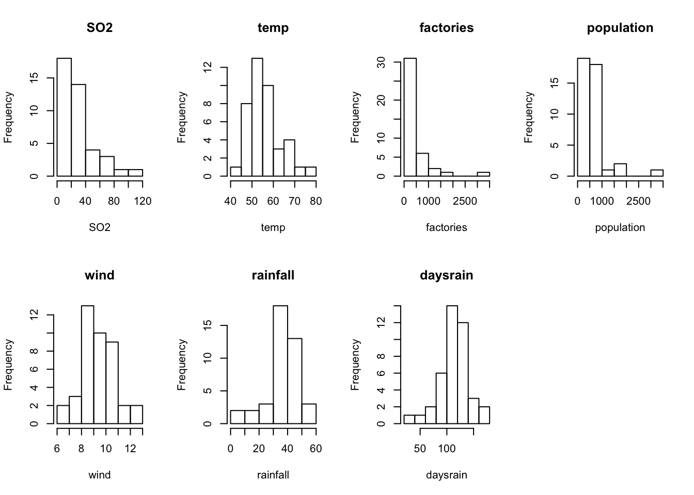
Then the pairwise scatterplots
pairs(so2)
Correlation plot of all numeric variables (this can be done nicely with the package corrplot)
cor_matrix <- cor(so2[, num_vars])
corrplot::corrplot(cor_matrix, method = "number")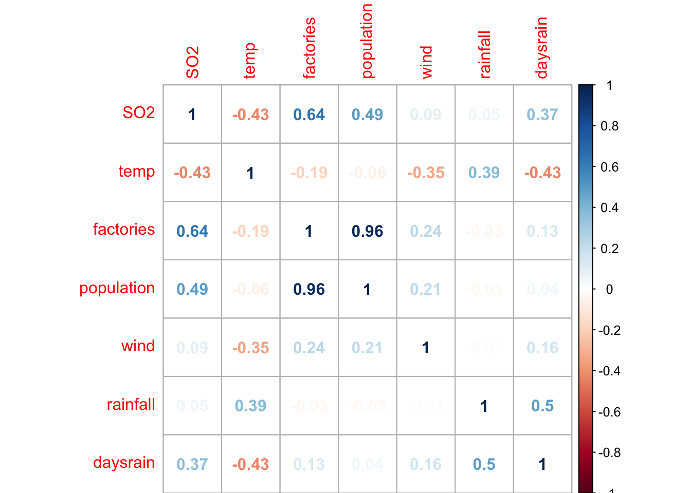
Now for the model building. We can use the step function for variable selection. Note that it uses the Akaike Information criterion for variable selection. NB we must remove the city variable, as this is merely a label of the observations, and is unique for each row.
model_vars <- setdiff(colnames(so2), "city") # take all colnames of so2, remove 'city' from these names
fit0 <- lm(SO2~1, data = so2[, model_vars])
fit_full <- lm(SO2~., data = so2[, model_vars]) # use ~. to include all variables except for SO2
steps_forward <- step(fit0, scope = list(lower = fit0, upper = fit_full), direction = "forward")Start: AIC=259.76
SO2 ~ 1
Df Sum of Sq RSS AIC
+ factories 1 9161.7 12876 239.73
+ population 1 5373.2 16665 250.31
+ temp 1 4143.3 17895 253.23
+ region 2 4253.5 17784 254.97
+ daysrain 1 3009.9 19028 255.74
<none> 22038 259.76
+ wind 1 197.6 21840 261.40
+ rainfall 1 64.9 21973 261.64
Step: AIC=239.73
SO2 ~ factories
Df Sum of Sq RSS AIC
+ population 1 3759.5 9116.6 227.58
+ region 2 4158.9 8717.3 227.74
+ temp 1 2212.3 10663.8 234.00
+ daysrain 1 1816.1 11060.0 235.50
<none> 12876.2 239.73
+ rainfall 1 124.8 12751.4 241.33
+ wind 1 80.6 12795.6 241.47
Step: AIC=227.58
SO2 ~ factories + population
Df Sum of Sq RSS AIC
+ region 2 2708.58 6408.1 217.12
+ daysrain 1 684.97 8431.7 226.37
+ temp 1 577.98 8538.7 226.89
<none> 9116.6 227.58
+ rainfall 1 148.34 8968.3 228.90
+ wind 1 146.93 8969.7 228.91
Step: AIC=217.12
SO2 ~ factories + population + region
Df Sum of Sq RSS AIC
+ temp 1 472.28 5935.8 215.98
<none> 6408.1 217.12
+ wind 1 167.46 6240.6 218.04
+ daysrain 1 104.02 6304.0 218.45
+ rainfall 1 25.70 6382.3 218.96
Step: AIC=215.98
SO2 ~ factories + population + region + temp
Df Sum of Sq RSS AIC
+ wind 1 309.787 5626.0 215.78
<none> 5935.8 215.98
+ daysrain 1 0.276 5935.5 217.98
+ rainfall 1 0.040 5935.7 217.98
Step: AIC=215.78
SO2 ~ factories + population + region + temp + wind
Df Sum of Sq RSS AIC
<none> 5626.0 215.78
+ rainfall 1 49.183 5576.8 217.43
+ daysrain 1 3.753 5622.2 217.76steps_backward <- step(fit_full, data = so2[, model_vars], direction = "backward")Start: AIC=219.29
SO2 ~ temp + factories + population + wind + rainfall + daysrain +
region
Df Sum of Sq RSS AIC
- daysrain 1 18.9 5576.8 217.43
- rainfall 1 64.3 5622.2 217.76
<none> 5557.9 219.29
- wind 1 377.5 5935.4 219.98
- temp 1 443.3 6001.2 220.43
- population 1 1154.9 6712.8 225.03
- region 2 1725.4 7283.3 226.37
- factories 1 3313.9 8871.8 236.46
Step: AIC=217.42
SO2 ~ temp + factories + population + wind + rainfall + region
Df Sum of Sq RSS AIC
- rainfall 1 49.2 5626.0 215.78
<none> 5576.8 217.43
- wind 1 358.9 5935.7 217.98
- temp 1 662.8 6239.6 220.03
- population 1 1160.0 6736.8 223.17
- region 2 1728.6 7305.4 224.50
- factories 1 3316.6 8893.4 234.56
Step: AIC=215.78
SO2 ~ temp + factories + population + wind + region
Df Sum of Sq RSS AIC
<none> 5626.0 215.78
- wind 1 309.8 5935.8 215.98
- temp 1 614.6 6240.6 218.04
- population 1 1247.5 6873.5 222.00
- region 2 2464.8 8090.8 226.68
- factories 1 3589.2 9215.2 234.02steps_stepwise <- step(fit0, scope = list(upper = fit_full), data = so2[, model_vars], direction = "both")Start: AIC=259.76
SO2 ~ 1
Df Sum of Sq RSS AIC
+ factories 1 9161.7 12876 239.73
+ population 1 5373.2 16665 250.31
+ temp 1 4143.3 17895 253.23
+ region 2 4253.5 17784 254.97
+ daysrain 1 3009.9 19028 255.74
<none> 22038 259.76
+ wind 1 197.6 21840 261.40
+ rainfall 1 64.9 21973 261.64
Step: AIC=239.73
SO2 ~ factories
Df Sum of Sq RSS AIC
+ population 1 3759.5 9116.6 227.58
+ region 2 4158.9 8717.3 227.74
+ temp 1 2212.3 10663.8 234.00
+ daysrain 1 1816.1 11060.0 235.50
<none> 12876.2 239.73
+ rainfall 1 124.8 12751.4 241.33
+ wind 1 80.6 12795.6 241.47
- factories 1 9161.7 22037.9 259.76
Step: AIC=227.58
SO2 ~ factories + population
Df Sum of Sq RSS AIC
+ region 2 2708.6 6408.1 217.12
+ daysrain 1 685.0 8431.7 226.37
+ temp 1 578.0 8538.7 226.89
<none> 9116.6 227.58
+ rainfall 1 148.3 8968.3 228.90
+ wind 1 146.9 8969.7 228.91
- population 1 3759.5 12876.2 239.73
- factories 1 7548.0 16664.7 250.31
Step: AIC=217.12
SO2 ~ factories + population + region
Df Sum of Sq RSS AIC
+ temp 1 472.3 5935.8 215.98
<none> 6408.1 217.12
+ wind 1 167.5 6240.6 218.04
+ daysrain 1 104.0 6304.0 218.45
+ rainfall 1 25.7 6382.3 218.96
- region 2 2708.6 9116.6 227.58
- population 1 2309.3 8717.3 227.74
- factories 1 5478.7 11886.7 240.45
Step: AIC=215.98
SO2 ~ factories + population + region + temp
Df Sum of Sq RSS AIC
+ wind 1 309.8 5626.0 215.78
<none> 5935.8 215.98
- temp 1 472.3 6408.1 217.12
+ daysrain 1 0.3 5935.5 217.98
+ rainfall 1 0.0 5935.7 217.98
- population 1 1347.9 7283.6 222.37
- region 2 2602.9 8538.7 226.89
- factories 1 3659.7 9595.4 233.67
Step: AIC=215.78
SO2 ~ factories + population + region + temp + wind
Df Sum of Sq RSS AIC
<none> 5626.0 215.78
- wind 1 309.8 5935.8 215.98
+ rainfall 1 49.2 5576.8 217.43
+ daysrain 1 3.8 5622.2 217.76
- temp 1 614.6 6240.6 218.04
- population 1 1247.5 6873.5 222.00
- region 2 2464.8 8090.8 226.68
- factories 1 3589.2 9215.2 234.02The function by default prints all the steps. I do not know how to stop this behaviour
Look at the final models:
summary(steps_forward)
Call:
lm(formula = SO2 ~ factories + population + region + temp + wind,
data = so2[, model_vars])
Residuals:
Min 1Q Median 3Q Max
-33.912 -7.646 0.102 5.037 39.960
Coefficients:
Estimate Std. Error t value Pr(>|t|)
(Intercept) 84.66810 28.26707 2.995 0.00509 **
factories 0.06387 0.01371 4.657 4.76e-05 ***
population -0.03638 0.01325 -2.746 0.00958 **
regionNortheast 12.63719 6.92759 1.824 0.07692 .
regionMidwest/West -8.35751 5.55350 -1.505 0.14158
temp -0.71117 0.36900 -1.927 0.06234 .
wind -2.17945 1.59285 -1.368 0.18020
---
Signif. codes: 0 '***' 0.001 '**' 0.01 '*' 0.05 '.' 0.1 ' ' 1
Residual standard error: 12.86 on 34 degrees of freedom
Multiple R-squared: 0.7447, Adjusted R-squared: 0.6997
F-statistic: 16.53 on 6 and 34 DF, p-value: 8.184e-09summary(steps_backward)
Call:
lm(formula = SO2 ~ temp + factories + population + wind + region,
data = so2[, model_vars])
Residuals:
Min 1Q Median 3Q Max
-33.912 -7.646 0.102 5.037 39.960
Coefficients:
Estimate Std. Error t value Pr(>|t|)
(Intercept) 84.66810 28.26707 2.995 0.00509 **
temp -0.71117 0.36900 -1.927 0.06234 .
factories 0.06387 0.01371 4.657 4.76e-05 ***
population -0.03638 0.01325 -2.746 0.00958 **
wind -2.17945 1.59285 -1.368 0.18020
regionNortheast 12.63719 6.92759 1.824 0.07692 .
regionMidwest/West -8.35751 5.55350 -1.505 0.14158
---
Signif. codes: 0 '***' 0.001 '**' 0.01 '*' 0.05 '.' 0.1 ' ' 1
Residual standard error: 12.86 on 34 degrees of freedom
Multiple R-squared: 0.7447, Adjusted R-squared: 0.6997
F-statistic: 16.53 on 6 and 34 DF, p-value: 8.184e-09summary(steps_stepwise)
Call:
lm(formula = SO2 ~ factories + population + region + temp + wind,
data = so2[, model_vars])
Residuals:
Min 1Q Median 3Q Max
-33.912 -7.646 0.102 5.037 39.960
Coefficients:
Estimate Std. Error t value Pr(>|t|)
(Intercept) 84.66810 28.26707 2.995 0.00509 **
factories 0.06387 0.01371 4.657 4.76e-05 ***
population -0.03638 0.01325 -2.746 0.00958 **
regionNortheast 12.63719 6.92759 1.824 0.07692 .
regionMidwest/West -8.35751 5.55350 -1.505 0.14158
temp -0.71117 0.36900 -1.927 0.06234 .
wind -2.17945 1.59285 -1.368 0.18020
---
Signif. codes: 0 '***' 0.001 '**' 0.01 '*' 0.05 '.' 0.1 ' ' 1
Residual standard error: 12.86 on 34 degrees of freedom
Multiple R-squared: 0.7447, Adjusted R-squared: 0.6997
F-statistic: 16.53 on 6 and 34 DF, p-value: 8.184e-096. Cigarettes
This is a repeat of exercise #2, but now in R. Compare the results with those obtained in SPSS. The workspace cigarette.RData contains a dataset cigarettte with data on carbon monoxide, tar and nicotine contents and weight of 25 brands of cigarettes. We want to predict the carbon monoxide contents using the other 3 variables. a. Make a scatter plot matrix of the 4 variables, and formulate which variables you expect to predict (part of) carbon monoxide content.
NB the RData file did not seem to contain any data, so we imported the SPSS file with package foreign
epistats::fromParentDir("data/cigarette.RData")
cigarette <- foreign::read.spss(epistats::fromParentDir("data/cigarette.sav"))
cigarette <- as.data.frame(cigarette)
# save file:
# save(cigarette, file = epistats::fromParentDir("data/cigarette2.RData"))
pairs(cigarette)
Nicotine looks highly correlated with tar and carbonmonoxide. Carbonmonoxide looks highly correlated with tar too.
- Now make a correlation matrix of the 4 variables, and check your expectations from a.
corrplot::corrplot(cor(cigarette), method = "number")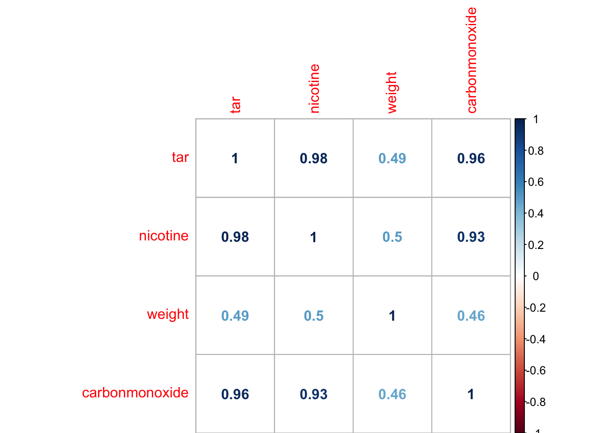
- Build a regression model with all 3 predictor variables. Are all variables significant? Are regression coefficients what you would expect? Can you think of an explanation?
fit_full <- lm(carbonmonoxide~., data = cigarette)
summary(fit_full)
Call:
lm(formula = carbonmonoxide ~ ., data = cigarette)
Residuals:
Min 1Q Median 3Q Max
-2.89261 -0.78269 0.00428 0.92891 2.45082
Coefficients:
Estimate Std. Error t value Pr(>|t|)
(Intercept) 3.2022 3.4618 0.925 0.365464
tar 0.9626 0.2422 3.974 0.000692 ***
nicotine -2.6317 3.9006 -0.675 0.507234
weight -0.1305 3.8853 -0.034 0.973527
---
Signif. codes: 0 '***' 0.001 '**' 0.01 '*' 0.05 '.' 0.1 ' ' 1
Residual standard error: 1.446 on 21 degrees of freedom
Multiple R-squared: 0.9186, Adjusted R-squared: 0.907
F-statistic: 78.98 on 3 and 21 DF, p-value: 1.329e-11Only tar is significant. If the explanatory variables were independent, we would expect that nicotine was alsa correlated with carbonmonoxide. However, due to coliniearity, the effect of nicotine vanishes when tar is included in the model.
- Using backward selection reduce the model from c until it contains only significant variables. Which variable(s) are in the final model? Which proportion of the variation in carbon monoxide content is explained by this model?
Let’s do manual backward selection
fit_full <- lm(carbonmonoxide~., data = cigarette)
summary(fit_full)
Call:
lm(formula = carbonmonoxide ~ ., data = cigarette)
Residuals:
Min 1Q Median 3Q Max
-2.89261 -0.78269 0.00428 0.92891 2.45082
Coefficients:
Estimate Std. Error t value Pr(>|t|)
(Intercept) 3.2022 3.4618 0.925 0.365464
tar 0.9626 0.2422 3.974 0.000692 ***
nicotine -2.6317 3.9006 -0.675 0.507234
weight -0.1305 3.8853 -0.034 0.973527
---
Signif. codes: 0 '***' 0.001 '**' 0.01 '*' 0.05 '.' 0.1 ' ' 1
Residual standard error: 1.446 on 21 degrees of freedom
Multiple R-squared: 0.9186, Adjusted R-squared: 0.907
F-statistic: 78.98 on 3 and 21 DF, p-value: 1.329e-11Use drop1 to determine which variable to drop first. Remove the coefficient with the highest p-value
drop1(fit_full, test = "F")Single term deletions
Model:
carbonmonoxide ~ tar + nicotine + weight
Df Sum of Sq RSS AIC F value Pr(>F)
<none> 43.893 22.072
tar 1 33.001 76.894 34.089 15.7892 0.0006921 ***
nicotine 1 0.951 44.844 20.608 0.4552 0.5072343
weight 1 0.002 43.895 20.073 0.0011 0.9735268
---
Signif. codes: 0 '***' 0.001 '**' 0.01 '*' 0.05 '.' 0.1 ' ' 1fit_1 <- lm(carbonmonoxide~tar+nicotine, data = cigarette)
drop1(fit_1, test = "F")Single term deletions
Model:
carbonmonoxide ~ tar + nicotine
Df Sum of Sq RSS AIC F value Pr(>F)
<none> 43.895 20.073
tar 1 33.000 76.894 32.089 16.5393 0.0005124 ***
nicotine 1 0.974 44.869 18.622 0.4882 0.4920350
---
Signif. codes: 0 '***' 0.001 '**' 0.01 '*' 0.05 '.' 0.1 ' ' 1Drop the next variable
fit_2 <- lm(carbonmonoxide ~ tar, data = cigarette)
drop1(fit_2, test = "F")Single term deletions
Model:
carbonmonoxide ~ tar
Df Sum of Sq RSS AIC F value Pr(>F)
<none> 44.87 18.622
tar 1 494.28 539.15 78.778 253.37 6.552e-14 ***
---
Signif. codes: 0 '***' 0.001 '**' 0.01 '*' 0.05 '.' 0.1 ' ' 1Now we cant remove anymore predictors, because ‘all’ are significant. Check assumptions of homoscedasticity and normal distribution of residuals:
plot(fit_2, which = c(1,2))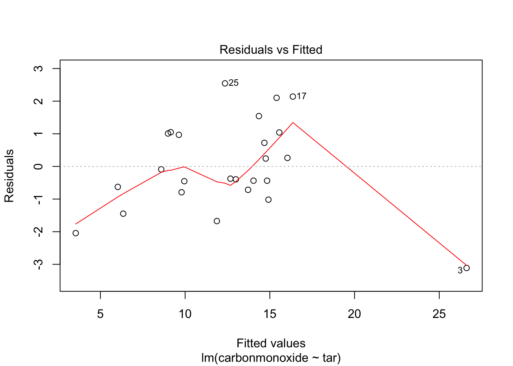
Residuals look pretty OK. Homoscedasticity is a little hard to judge, but at least there is no clear funnel shape.
- Based on the backward selection model, what is the predicted carbon monoxide content of a cigarette with tar = 13.0, nicotine = 1.0 and weight = 1.0? What is its 95% prediction interval, and how do you interpret this? (Use the R function predict to obtain predictions for new data based on the model:
new <- data.frame(tar=13.0, nicotine=1.0, weight=1.0)
predict(fit_2, newdata=new, interval="prediction", level=0.95) fit lwr upr
1 13.15597 10.20828 16.103657.
This is a repeat of exercise #4, but now in R. Compare the results with those obtained in SPSS. The variables in the study of 38 stream sites in New York state by Lovett et al. (2000) fell into two groups measured at different spatial sites ??? watershed variables (elevation, stream length and area) and chemical variables for a site averaged across sampling dates (averaged over 3 years). We use only the chemical variables. The data are given in the data file stream.RData
STREAM name of the stream (site) from which observations were collected MAXELEV maximum elevation of stream (m above sea level) SAMPELEV site elevation (m above sea level) LENGTH length of stream AREA area of watershed NO3 concentration (mmol/L) of nitrogen oxide ions TON concentration (mmol/L) of total organic nitrogen TN concentration (mmol/L) of total nitrogen NH4 concentration (mmol/L) of ammonia ions DOC concentration (mmol/L) of dissolved oxygen SO4 concentration (mmol/L) of sulphur dioxide ions CL concentration (mmol/L) of chloride ions CA concentration (mmol/L) of calcium ions MG concentration (mmol/L) of magnesium ions H concentration (mmol/L) of hydrogen ions
Which of the chemical variables can predict the maximum elevation of the stream? Lovett et al. have used the log of the variables DOC, CL and H in their analyses. Can you imagine why they did it and is it necessary?
load(epistats::fromParentDir("data/stream.RData"))
str(stream)'data.frame': 38 obs. of 15 variables:
$ STREAM : Factor w/ 38 levels "Batavia Hill",..: 28 10 14 1 37 29 20 16 35 22 ...
$ MAXELEV : num 1006 1216 1204 1213 1074 ...
$ SAMPELEV: num 680 628 625 663 616 451 463 634 658 674 ...
$ LENGTH : num 1680 3912 4032 3072 2520 ...
$ AREA : num 23 462 297 399 207 348 179 504 546 279 ...
$ NO3 : num 24.2 25.4 29.7 22.1 13.1 27.5 28.1 31.2 22.6 35.9 ...
$ TON : num 5.6 4.9 4.4 6.1 5.7 3 4.7 5.4 3.1 4.9 ...
$ TN : num 29.9 30.3 33 28.3 17.6 30.8 32.8 37.1 26 39.8 ...
$ NH4 : num 0.8 1.4 0.8 1.4 0.6 1.1 1.4 2.5 3.1 1.4 ...
$ DOC : num 180.4 108.8 104.7 84.5 82.4 ...
$ SO4 : num 50.6 55.4 56.5 57.5 58.3 63 66.5 64.5 63.4 58.4 ...
$ CL : num 15.5 16.4 17.1 16.8 18.3 15.7 26.9 22 21.3 29.8 ...
$ CA : num 54.7 58.4 65.9 59.5 54.6 68.5 84.6 73.1 71.1 91.2 ...
$ MG : num 14.4 17 19.6 19.5 21.9 22.4 26.2 25.4 21.8 22.2 ...
$ H : num 0.48 0.24 0.47 0.23 0.37 0.17 0.14 0.14 0.16 0.1 ...All variables are numeric, except for STREAM, which is the name of the site. Lets remove this variable to make our lives easier
streams <- stream$STREAM
stream$STREAM <- NULL
car::scatterplotMatrix(stream[, c(1:7)], diagonal = "histogram")
car::scatterplotMatrix(stream[, c(8:14)], diagonal = "histogram")
It looks like LENGTH and AREA are tightly correlated, like NO3 and TN, also SO4 and MG. Note that many scatterplots were not included due to the limited plot area.
We can formalize this by sorting the correlations
# create correlation matrix
cor_matrix <- cor(stream)
# to remove the uninformative diagonal, and duplicity, retain only upper triangle
cor_matrix[lower.tri(cor_matrix, diag = T)] <- NA
# to analyze this, 'melt' the data to a conveniant format
cor_melted <- data.table::melt(cor_matrix, value.name = "correlation")
# remove the NA values
cor_melted <- cor_melted[!is.na(cor_melted$correlation),]
head(cor_melted) Var1 Var2 correlation
15 MAXELEV SAMPELEV 0.3711472
29 MAXELEV LENGTH 0.3423315
30 SAMPELEV LENGTH -0.2593533
43 MAXELEV AREA 0.3043967
44 SAMPELEV AREA -0.3109707
45 LENGTH AREA 0.9014002# add a column with absolute correlation
cor_melted$abs_cor <- abs(cor_melted$correlation)
# sort by that column
cor_melted[order(cor_melted$abs_cor, decreasing = T), ][1:10,] Var1 Var2 correlation abs_cor
89 NO3 TN 0.9828672 0.9828672
45 LENGTH AREA 0.9014002 0.9014002
178 SO4 MG 0.7413800 0.7413800
194 CA H -0.7189951 0.7189951
170 SAMPELEV MG -0.6456606 0.6456606
57 MAXELEV NO3 0.5896226 0.5896226
85 MAXELEV TN 0.5745820 0.5745820
142 SAMPELEV CL -0.5620794 0.5620794
179 CL MG 0.5491171 0.5491171
145 NO3 CL -0.4999713 0.4999713Zoom in on only DOC, CL and H
car::scatterplotMatrix(stream[, c("MAXELEV", "DOC", "CL", "H")], diagonal = "histogram")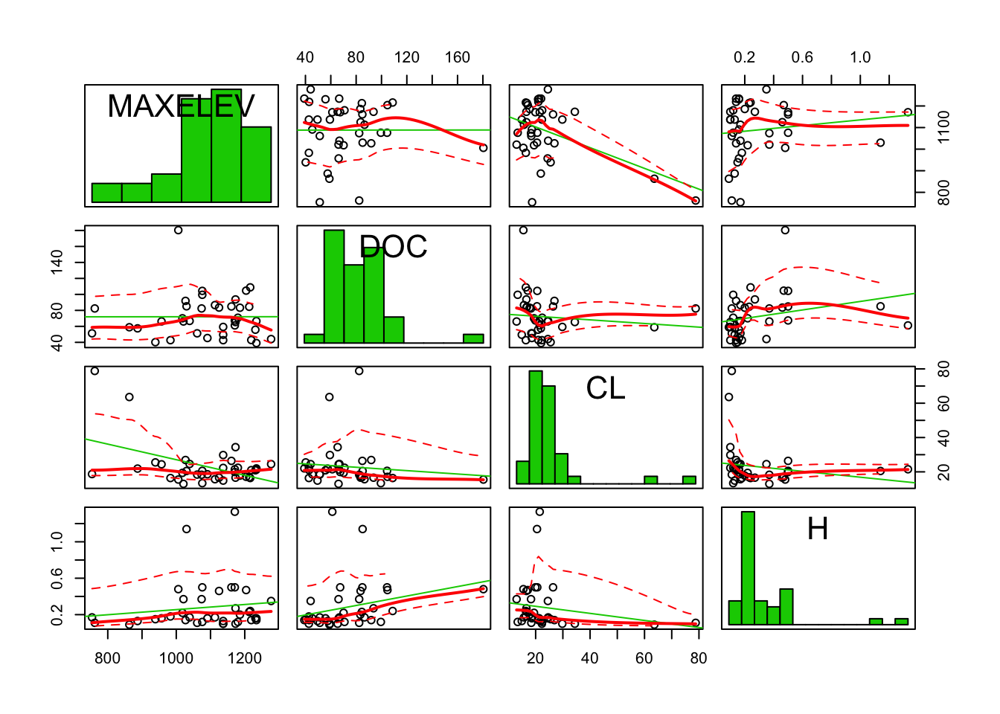
These 3 variables are right skewed, which is probably why they were log-transformed
Look at the transformed variables
require(dplyr)
stream %>%
mutate(DOC = log(DOC),
CL = log(CL),
H = log(H)) %>%
select(c(MAXELEV, DOC, CL, H)) %>%
car::scatterplotMatrix(diagonal = "histogram")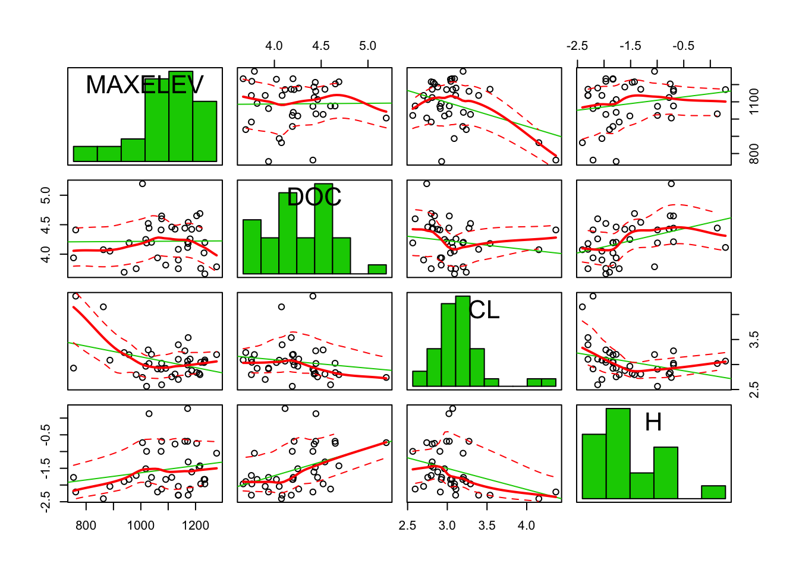
The distributions look a little nicer now. However, for linear regression, normality of the independent variables is not assumed, only a linear relation between the independent variables and the dependent variable.
To answer the question which variables predict the elevation, lets use the step function with stepwise selection. And lets keep the transformed variables
stream$DOC = log(stream$DOC)
stream$CL = log(stream$CL)
stream$H = log(stream$H)
fit0 = lm(MAXELEV ~ 1, data = stream)
fit_all = lm(MAXELEV ~., data = stream)
fit_step <- step(fit0, scope = list(upper = fit_all), data = stream, direction = "both")Start: AIC=369.87
MAXELEV ~ 1
Df Sum of Sq RSS AIC
+ NO3 1 211483 396830 355.64
+ TN 1 200831 407481 356.65
+ MG 1 125910 482402 363.06
+ SO4 1 114802 493510 363.93
+ CL 1 90524 517788 365.75
+ SAMPELEV 1 83795 524517 366.24
+ LENGTH 1 71289 537024 367.14
+ AREA 1 56365 551948 368.18
<none> 608312 369.87
+ H 1 25044 583268 370.28
+ TON 1 16637 591675 370.82
+ CA 1 16131 592181 370.85
+ NH4 1 3652 604660 371.64
+ DOC 1 72 608240 371.87
Step: AIC=355.64
MAXELEV ~ NO3
Df Sum of Sq RSS AIC
+ SO4 1 102548 294282 346.28
+ AREA 1 77313 319517 349.41
+ LENGTH 1 68317 328513 350.46
+ CA 1 60420 336410 351.36
+ MG 1 45432 351397 353.02
+ NH4 1 23092 373738 355.36
<none> 396830 355.64
+ H 1 17065 379765 355.97
+ CL 1 14118 382712 356.26
+ SAMPELEV 1 11679 385151 356.50
+ TON 1 3366 393463 357.32
+ DOC 1 1119 395710 357.53
+ TN 1 437 396393 357.60
- NO3 1 211483 608312 369.87
Step: AIC=346.28
MAXELEV ~ NO3 + SO4
Df Sum of Sq RSS AIC
+ AREA 1 52202 242080 340.86
+ LENGTH 1 49310 244972 341.31
+ NH4 1 33066 261215 343.75
+ DOC 1 23567 270715 345.11
<none> 294282 346.28
+ CA 1 9363 284918 347.05
+ TN 1 8723 285558 347.14
+ TON 1 5062 289220 347.62
+ MG 1 2931 291351 347.90
+ SAMPELEV 1 2115 292167 348.00
+ CL 1 1282 293000 348.11
+ H 1 269 294013 348.24
- SO4 1 102548 396830 355.64
- NO3 1 199229 493510 363.93
Step: AIC=340.86
MAXELEV ~ NO3 + SO4 + AREA
Df Sum of Sq RSS AIC
+ NH4 1 39016 203064 336.18
+ TN 1 23464 218616 338.98
+ TON 1 19461 222619 339.67
<none> 242080 340.86
+ CA 1 7166 234914 341.72
+ DOC 1 5152 236928 342.04
+ CL 1 4352 237728 342.17
+ SAMPELEV 1 3524 238556 342.30
+ MG 1 1854 240226 342.57
+ LENGTH 1 1305 240775 342.65
+ H 1 365 241715 342.80
- AREA 1 52202 294282 346.28
- SO4 1 77437 319517 349.41
- NO3 1 217016 459096 363.18
Step: AIC=336.18
MAXELEV ~ NO3 + SO4 + AREA + NH4
Df Sum of Sq RSS AIC
+ TN 1 17658 185406 334.72
+ TON 1 15775 187289 335.11
+ CL 1 12490 190575 335.77
<none> 203064 336.18
+ CA 1 9713 193351 336.32
+ LENGTH 1 7959 195105 336.66
+ SAMPELEV 1 4292 198772 337.37
+ H 1 257 202807 338.13
+ MG 1 257 202807 338.13
+ DOC 1 173 202891 338.15
- NH4 1 39016 242080 340.86
- AREA 1 58151 261215 343.75
- SO4 1 85859 288923 347.58
- NO3 1 245491 448555 364.30
Step: AIC=334.72
MAXELEV ~ NO3 + SO4 + AREA + NH4 + TN
Df Sum of Sq RSS AIC
- NO3 1 2112 187518 333.15
+ LENGTH 1 13597 171809 333.83
+ CL 1 9582 175824 334.71
<none> 185406 334.72
+ SAMPELEV 1 8921 176485 334.85
+ CA 1 7152 178254 335.23
- TN 1 17658 203064 336.18
+ MG 1 2609 182797 336.18
+ DOC 1 490 184916 336.62
+ TON 1 223 185183 336.68
+ H 1 165 185241 336.69
- NH4 1 33210 218616 338.98
- AREA 1 70594 256000 344.98
- SO4 1 102094 287500 349.39
Step: AIC=333.15
MAXELEV ~ SO4 + AREA + NH4 + TN
Df Sum of Sq RSS AIC
+ LENGTH 1 10817 176701 332.90
+ CL 1 9896 177622 333.09
<none> 187518 333.15
+ CA 1 8253 179264 333.44
+ SAMPELEV 1 6078 181439 333.90
+ TON 1 2301 185217 334.68
+ NO3 1 2112 185406 334.72
+ MG 1 399 187119 335.07
+ H 1 191 187327 335.11
+ DOC 1 87 187431 335.14
- NH4 1 36261 223779 337.87
- AREA 1 68613 256131 343.00
- SO4 1 102916 290434 347.78
- TN 1 261037 448555 364.30
Step: AIC=332.9
MAXELEV ~ SO4 + AREA + NH4 + TN + LENGTH
Df Sum of Sq RSS AIC
- AREA 1 262 176963 330.95
+ CL 1 10343 166358 332.60
<none> 176701 332.90
- LENGTH 1 10817 187518 333.15
+ CA 1 7664 169037 333.21
+ SAMPELEV 1 6084 170616 333.56
+ TON 1 5135 171566 333.78
+ NO3 1 4892 171809 333.83
+ H 1 193 176508 334.85
+ DOC 1 28 176673 334.89
+ MG 1 8 176693 334.89
- NH4 1 44538 221239 339.44
- SO4 1 106712 283413 348.85
- TN 1 243016 419716 363.77
Step: AIC=330.95
MAXELEV ~ SO4 + NH4 + TN + LENGTH
Df Sum of Sq RSS AIC
+ CL 1 10213 166750 330.69
<none> 176963 330.95
+ CA 1 7626 169336 331.28
+ SAMPELEV 1 5402 171560 331.77
+ TON 1 5295 171668 331.80
+ NO3 1 5076 171887 331.85
+ AREA 1 262 176701 332.90
+ H 1 194 176769 332.91
+ DOC 1 62 176900 332.94
+ MG 1 40 176923 332.94
- NH4 1 48073 225036 338.08
- LENGTH 1 79168 256131 343.00
- SO4 1 109571 286534 347.27
- TN 1 248098 425061 362.25
Step: AIC=330.69
MAXELEV ~ SO4 + NH4 + TN + LENGTH + CL
Df Sum of Sq RSS AIC
<none> 166750 330.69
- CL 1 10213 176963 330.95
+ TON 1 5816 160934 331.34
+ CA 1 4724 162027 331.60
+ NO3 1 4680 162070 331.61
+ MG 1 3642 163108 331.85
+ SAMPELEV 1 876 165874 332.49
+ AREA 1 392 166358 332.60
+ H 1 94 166656 332.67
+ DOC 1 16 166734 332.69
- NH4 1 56120 222870 339.72
- SO4 1 82718 249468 344.00
- LENGTH 1 85175 251925 344.37
- TN 1 171771 338521 355.60Look at the final model:
summary(fit_step)
Call:
lm(formula = MAXELEV ~ SO4 + NH4 + TN + LENGTH + CL, data = stream)
Residuals:
Min 1Q Median 3Q Max
-149.47 -34.21 12.13 38.67 133.98
Coefficients:
Estimate Std. Error t value Pr(>|t|)
(Intercept) 1.384e+03 1.785e+02 7.754 7.67e-09 ***
SO4 -9.575e+00 2.403e+00 -3.984 0.000366 ***
NH4 5.667e+01 1.727e+01 3.282 0.002497 **
TN 9.361e+00 1.630e+00 5.741 2.30e-06 ***
LENGTH 3.013e-02 7.452e-03 4.043 0.000310 ***
CL -5.515e+01 3.939e+01 -1.400 0.171147
---
Signif. codes: 0 '***' 0.001 '**' 0.01 '*' 0.05 '.' 0.1 ' ' 1
Residual standard error: 72.19 on 32 degrees of freedom
Multiple R-squared: 0.7259, Adjusted R-squared: 0.683
F-statistic: 16.95 on 5 and 32 DF, p-value: 3.501e-08Note that the CL variable remains included, even though we would drop this variable when using the p-values based on the F-statistic.
Of the variable pairs that were tightly correlated, in none of the cases both variables were included.
Check assumptions of the model
plot(fit_step, which = c(1,2))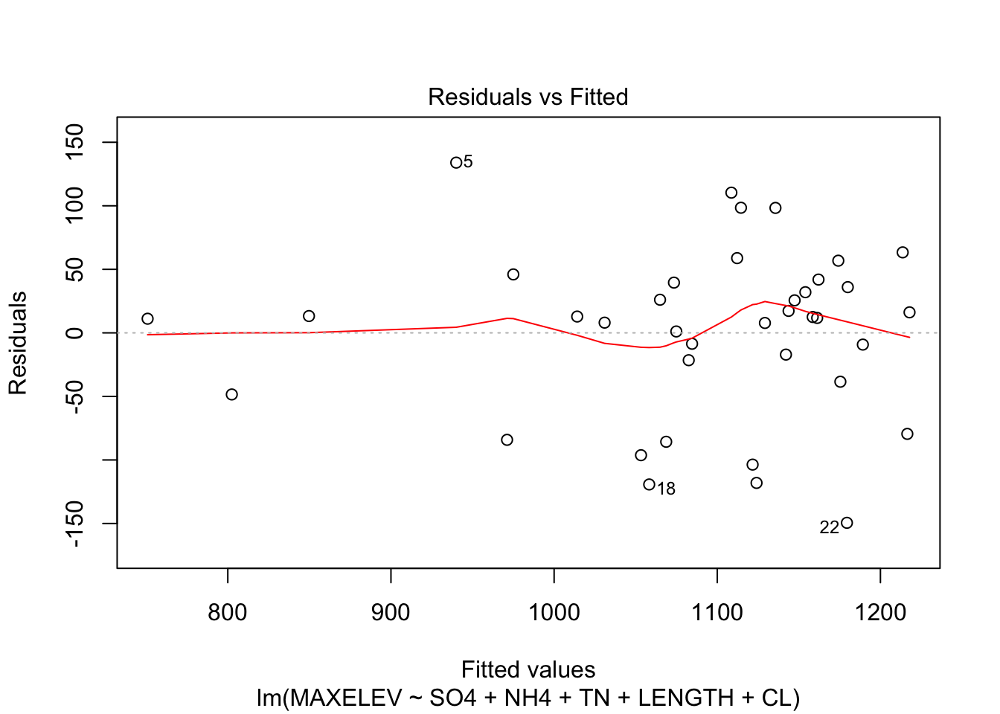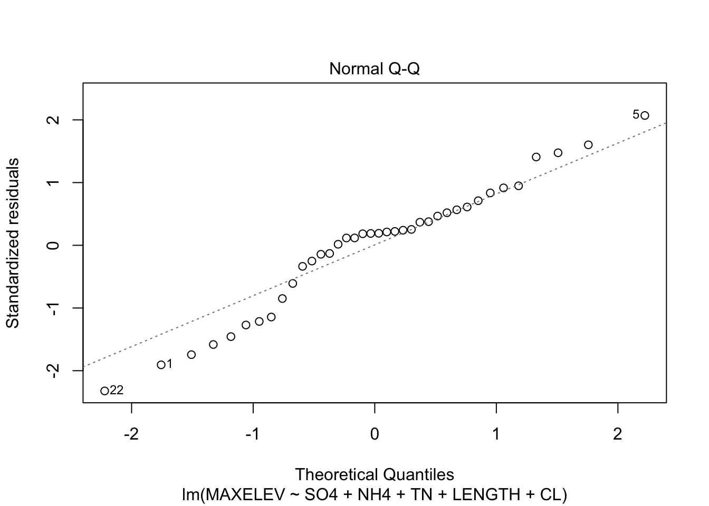
Residuals are a little skewed, not too much heteroscedasticity.
Day 10 model building issues
Exercises with R
See the notes at the beginning of Exercises with R on day 9, especially how to check for multicollinearity.
7.
This is a repeat of exercise #1, but now in R. (Note that where SPSS calculates the “tolerance” for the excluded variables, R calculates it for the variables in the model.) a. Build a regression model with all 3 predictors. What is the tolerance for weight in this model? (Use the command 1/vif(), see previous day.)
fit <- lm(carbonmonoxide~., data = cigarette)
1/vif(fit) tar nicotine weight
0.04623058 0.04566227 0.74970451
- Now do a multiple regression with weight as dependent variable and tar and nicotine as predictors. What is the R2 of this model? How does it relate to the Tolerance?
fit_weight <- lm(weight~tar+nicotine, data = cigarette)
summary(fit_weight)
Call:
lm(formula = weight ~ tar + nicotine, data = cigarette)
Residuals:
Min 1Q Median 3Q Max
-0.102616 -0.056166 -0.002679 0.043905 0.165134
Coefficients:
Estimate Std. Error t value Pr(>|t|)
(Intercept) 0.8628078 0.0473886 18.207 9.4e-15 ***
tar 0.0007645 0.0132917 0.058 0.955
nicotine 0.1119774 0.2127000 0.526 0.604
---
Signif. codes: 0 '***' 0.001 '**' 0.01 '*' 0.05 '.' 0.1 ' ' 1
Residual standard error: 0.07933 on 22 degrees of freedom
Multiple R-squared: 0.2503, Adjusted R-squared: 0.1821
F-statistic: 3.672 on 2 and 22 DF, p-value: 0.04205The \(R^2\) from this fit is the same as the tolerance from tar from above.
- Now what is the tolerance of nicotine in the model with only tar and nicotine? Check this, analogously to what you did in b.
fit2 <- lm(carbonmonoxide~tar+nicotine, data = cigarette)
1/vif(fit2) tar nicotine
0.04623753 0.04623753 The tolerance is hardly changed, so it looks like nicotine was pretty independent of weight in our sample.
8.
This is a repeat of exercise #2, but now in R. An indicator of a tree’s production capacity is the canopy. We want to examine whether there is a relation between the canopy and the production for fruit trees, and whether fertilizer has an influence on the relation. To answer this question, data on the canopy and production were collected from 14 available trees (6 fertilized and 8 unfertilized). The data are stored in crownarea.RData . a. Test whether the coefficient for the slope in the two groups (fertilized & unfertilized) is the same; i.e. are the lines for the two groups parallel or not?
load(epistats::fromParentDir("data/crownarea.RData"))
str(crownarea)'data.frame': 14 obs. of 3 variables:
$ FERTILIZ:Class 'labelled' atomic [1:14] 0 0 0 0 0 0 1 1 1 1 ...
.. ..- attr(*, "label")= Named chr " "
.. .. ..- attr(*, "names")= chr "FERTILIZ"
$ PRODUCTI:Class 'labelled' atomic [1:14] 5 4 6 5 9 11 10 8 12 10 ...
.. ..- attr(*, "label")= Named chr " "
.. .. ..- attr(*, "names")= chr "PRODUCTI"
$ CROWNARE:Class 'labelled' atomic [1:14] 4 6 6 8 16 16 2 4 4 6 ...
.. ..- attr(*, "label")= Named chr " "
.. .. ..- attr(*, "names")= chr "CROWNARE"The variable classes are pretty uncommon for R. Probably due to transferring data from SPSS to R. Let’s polish them up.
crownarea$FERTILIZ <- factor(crownarea$FERTILIZ)
crownarea$PRODUCTI <- as.numeric(crownarea$PRODUCTI)
crownarea$CROWNARE <- as.numeric(crownarea$CROWNARE)fit <- lm(PRODUCTI~CROWNARE*FERTILIZ, data = crownarea)
summary(fit)
Call:
lm(formula = PRODUCTI ~ CROWNARE * FERTILIZ, data = crownarea)
Residuals:
Min 1Q Median 3Q Max
-2.2222 -0.9811 0.0000 1.0597 1.7778
Coefficients:
Estimate Std. Error t value Pr(>|t|)
(Intercept) 2.26415 1.23384 1.835 0.09638 .
CROWNARE 0.47170 0.11729 4.022 0.00243 **
FERTILIZ1 6.18029 1.62158 3.811 0.00342 **
CROWNARE:FERTILIZ1 -0.02725 0.16510 -0.165 0.87218
---
Signif. codes: 0 '***' 0.001 '**' 0.01 '*' 0.05 '.' 0.1 ' ' 1
Residual standard error: 1.394 on 10 degrees of freedom
Multiple R-squared: 0.8901, Adjusted R-squared: 0.8571
F-statistic: 26.99 on 3 and 10 DF, p-value: 4.142e-05There does not seem to be a statistically significant interaction between FERTILIZ and CROWNARE. Let’s check in a plot:
require(ggplot2)
ggplot(crownarea, aes(x = CROWNARE, y = PRODUCTI, col = FERTILIZ)) +
geom_point() +
geom_smooth(method = "lm")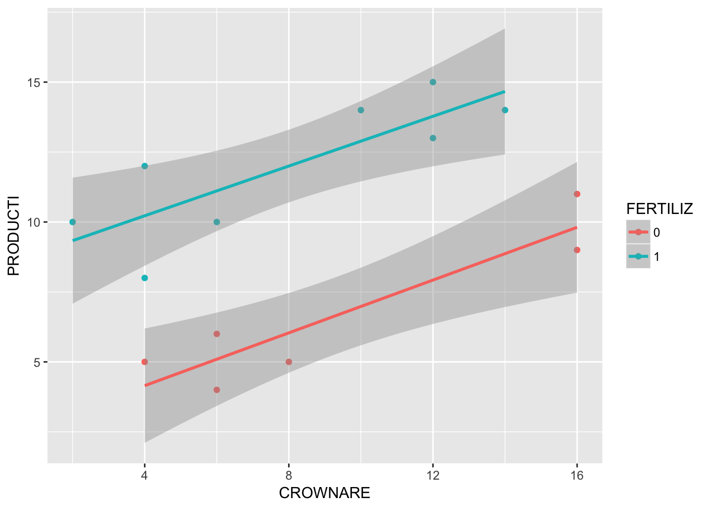
The intercepts look different, but the slopes look the same (so no interaction)
- Can the relation between canopy and production be described by one and the same line for both groups (fertilized & unfertilized)?
fit2 <- lm(PRODUCTI~CROWNARE + FERTILIZ, data = crownarea)
summary(fit2)
Call:
lm(formula = PRODUCTI ~ CROWNARE + FERTILIZ, data = crownarea)
Residuals:
Min 1Q Median 3Q Max
-2.16822 -1.00000 0.01402 1.02804 1.83178
Coefficients:
Estimate Std. Error t value Pr(>|t|)
(Intercept) 2.39252 0.91458 2.616 0.024000 *
CROWNARE 0.45794 0.07881 5.811 0.000117 ***
FERTILIZ1 5.94393 0.72661 8.180 5.28e-06 ***
---
Signif. codes: 0 '***' 0.001 '**' 0.01 '*' 0.05 '.' 0.1 ' ' 1
Residual standard error: 1.331 on 11 degrees of freedom
Multiple R-squared: 0.8898, Adjusted R-squared: 0.8697
F-statistic: 44.39 on 2 and 11 DF, p-value: 5.404e-06Although there seems to be no significant interaction, the intercept for both groups is pretty different, and significant in the model fit.
- Interpret the results.
Fertilization type seems to have an additive effect to canopy. For every level of canopy, fertilization status adds (or substracts, based on the reference category) the same amount of production.
- This is a repeat of exercise #3, but now in R. Read in the data file lowbirth.dat using the command
lb <- read.table(epistats::fromParentDir("data/lowbirth.dat"), header = T)
str(lb)'data.frame': 189 obs. of 11 variables:
$ id : int 85 86 87 88 89 91 92 93 94 95 ...
$ low : int 0 0 0 0 0 0 0 0 0 0 ...
$ age : int 19 33 20 21 18 21 22 17 29 26 ...
$ lwt : int 182 155 105 108 107 124 118 103 123 113 ...
$ race : int 2 3 1 1 1 3 1 3 1 1 ...
$ smoke: int 0 0 1 1 1 0 0 0 1 1 ...
$ ptl : int 0 0 0 0 0 0 0 0 0 0 ...
$ ht : int 0 0 0 0 0 0 0 0 0 0 ...
$ ui : int 1 0 0 1 1 0 0 0 0 0 ...
$ ftv : int 0 3 1 2 0 0 1 1 1 0 ...
$ bwt : int 2523 2551 2557 2594 2600 2622 2637 2637 2663 2665 ...We are only going to use the following variables: age age of the mother in years, ht history of hypertension (1 = yes, 0 = no) and bwt birth weight in grams
- Fit a model with bwt as dependent and with ht and age as independent variables. Also include the interaction between age and ht in the model.
First off, lets recode ht as a factor variable.
lb$ht <- factor(lb$ht)
fit <- lm(bwt ~ age*ht, data = lb)
summary(fit)
Call:
lm(formula = bwt ~ age * ht, data = lb)
Residuals:
Min 1Q Median 3Q Max
-2345.9 -540.4 42.8 528.2 1638.8
Coefficients:
Estimate Std. Error t value Pr(>|t|)
(Intercept) 2566.895 238.466 10.764 < 2e-16 ***
age 17.430 9.992 1.744 0.08274 .
ht1 2570.179 1149.784 2.235 0.02659 *
age:ht1 -130.899 49.281 -2.656 0.00859 **
---
Signif. codes: 0 '***' 0.001 '**' 0.01 '*' 0.05 '.' 0.1 ' ' 1
Residual standard error: 710.7 on 185 degrees of freedom
Multiple R-squared: 0.06467, Adjusted R-squared: 0.04951
F-statistic: 4.264 on 3 and 185 DF, p-value: 0.006124plot(fit, which = c(1,2))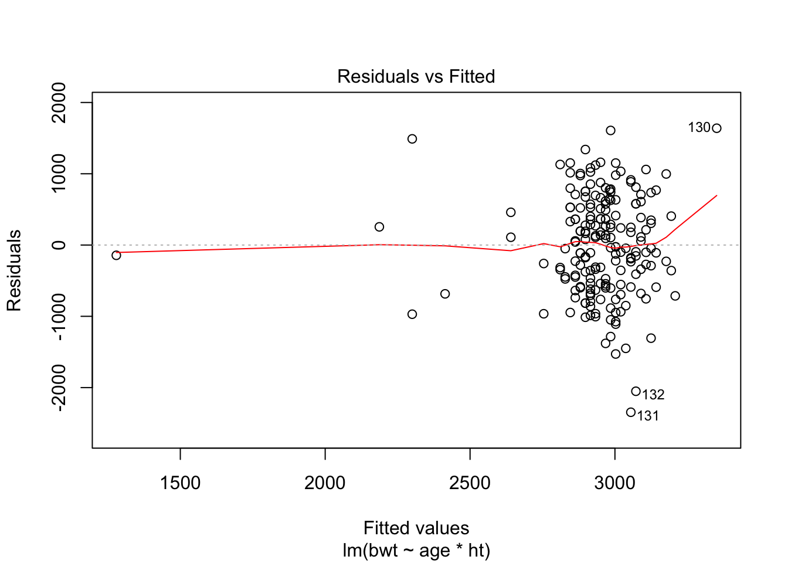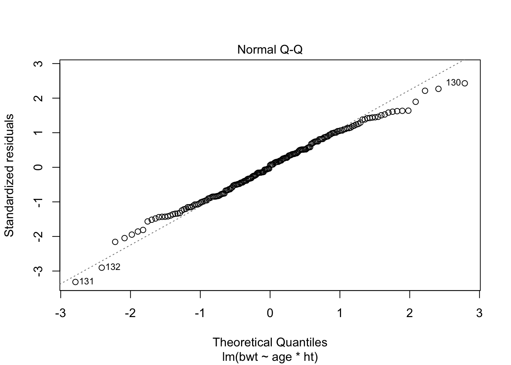
Assumptions of homoscedasticity and normality of residuals seem ok.
Plot the data:
require(ggplot2)
ggplot(lb, aes(x = age, y = bwt, col = ht)) +
geom_point() +
geom_smooth(method = "lm")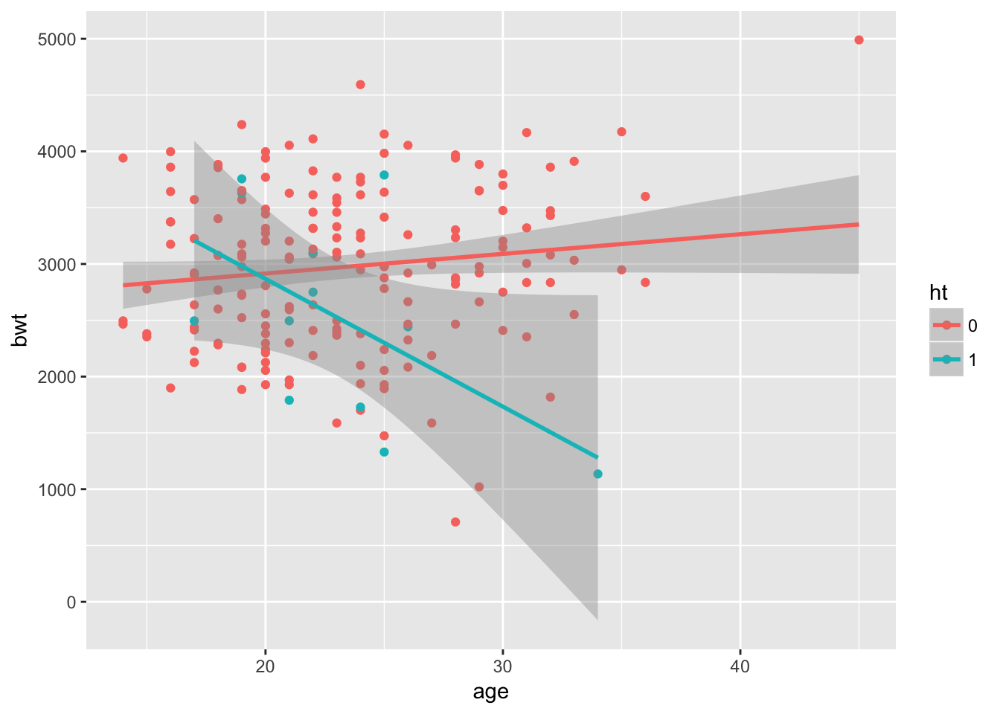
- Give an interpretation of the interaction term.
It looks like age itself is not a significant predictor, while hypertension is. However, in the group with hypertension, age seems to be an important factor. For participants with hypertension, increasing age is associated with a lower birthweight.
- Check whether you need the interaction term in the model.
summary(fit)
Call:
lm(formula = bwt ~ age * ht, data = lb)
Residuals:
Min 1Q Median 3Q Max
-2345.9 -540.4 42.8 528.2 1638.8
Coefficients:
Estimate Std. Error t value Pr(>|t|)
(Intercept) 2566.895 238.466 10.764 < 2e-16 ***
age 17.430 9.992 1.744 0.08274 .
ht1 2570.179 1149.784 2.235 0.02659 *
age:ht1 -130.899 49.281 -2.656 0.00859 **
---
Signif. codes: 0 '***' 0.001 '**' 0.01 '*' 0.05 '.' 0.1 ' ' 1
Residual standard error: 710.7 on 185 degrees of freedom
Multiple R-squared: 0.06467, Adjusted R-squared: 0.04951
F-statistic: 4.264 on 3 and 185 DF, p-value: 0.006124From the summary we see that the interaction term is significant. Let’s also compare \(R_adj^2\) between this model and a model without the interaction.
summary(lm(bwt~age+ht, data = lb))
Call:
lm(formula = bwt ~ age + ht, data = lb)
Residuals:
Min 1Q Median 3Q Max
-2320.42 -539.33 9.12 510.97 1755.74
Coefficients:
Estimate Std. Error t value Pr(>|t|)
(Intercept) 2692.051 237.539 11.333 <2e-16 ***
age 12.049 9.942 1.212 0.2271
ht1 -431.425 215.467 -2.002 0.0467 *
---
Signif. codes: 0 '***' 0.001 '**' 0.01 '*' 0.05 '.' 0.1 ' ' 1
Residual standard error: 722.2 on 186 degrees of freedom
Multiple R-squared: 0.02901, Adjusted R-squared: 0.01856
F-statistic: 2.778 on 2 and 186 DF, p-value: 0.06474The model with interaction term looks better
- Can the model be reduced further? Give the final model, the one that cannot be reduced further, and interpret this model.
We cannot reduce further. The interaction needs to be included, so also the intercepts for hypertension groups and the \(\beta\) for age.
10.
FEV (forced expiratory volume) is an index of pulmonary function that measures the volume of air expelled after one second of constant effort. The dataset fev.txt contains FEV measurements on 654 children, aged 6-22, who were seen in the Childhood Respiratory Disease Study in 1980 in East Boston, Massachusetts. The question of interest is whether a child’s smoking status has an effect on his FEV.
- Read the text file into R, using fev <- read.table(choose.files()). Results of earlier analyses indicate that logfev is a better measure to use in linear regression. Make a new variable fev\(logFEV <- log(fev\)FEV).
fev <- read.table(epistats::fromParentDir("data/fev.txt"), header = T)
fev$logFEV <- log(fev$FEV)
str(fev)'data.frame': 654 obs. of 7 variables:
$ ID : int 301 451 501 642 901 1701 1752 1753 1901 1951 ...
$ Age : int 9 8 7 9 9 8 6 6 8 9 ...
$ FEV : num 1.71 1.72 1.72 1.56 1.9 ...
$ Height: num 57 67.5 54.5 53 57 61 58 56 58.5 60 ...
$ Sex : Factor w/ 2 levels "Female","Male": 1 1 1 2 2 1 1 1 1 1 ...
$ Smoker: Factor w/ 2 levels "Current","Non": 2 2 2 2 2 2 2 2 2 2 ...
$ logFEV: num 0.535 0.545 0.542 0.443 0.639 ...
- Make a box plot of logfev by smoking status. What do you notice? What might be an explanation for this unexpected result? Test the difference in mean logfev between smokers and non-smokers using a t-test.
boxplot(logFEV~Smoker, data = fev)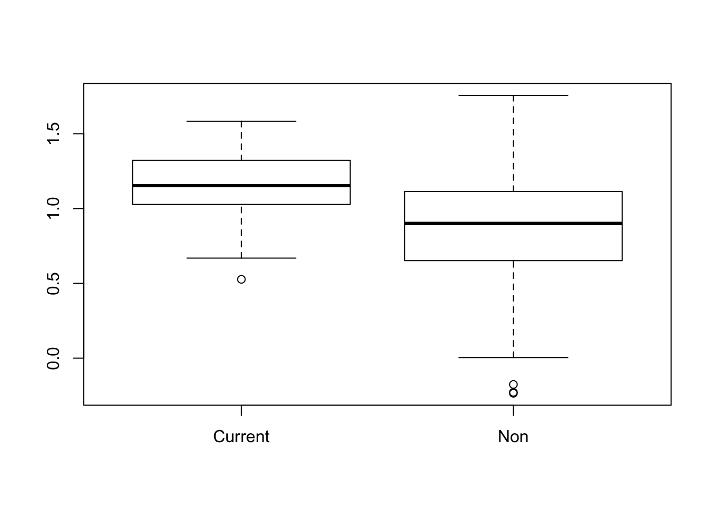
FEV looks higher in current smokers. Maybe this is mediated by age? Older children tend to smoke more often.
t.test(logFEV~Smoker, data = fev)
Welch Two Sample t-test
data: logFEV by Smoker
t = 8.4751, df = 94.957, p-value = 2.983e-13
alternative hypothesis: true difference in means is not equal to 0
95 percent confidence interval:
0.2083467 0.3358146
sample estimates:
mean in group Current mean in group Non
1.1604760 0.8883953
- Use linear regression to model logfev as a function of smoking status (note that the variable smoker cannot be used in regression; make a new variable smoke that takes the value 1 if the child is a current smoker and 0 if not); compare the result with part b).
fit <- lm(logFEV~Smoker, data = fev)
summary(fit)
Call:
lm(formula = logFEV ~ Smoker, data = fev)
Residuals:
Min 1Q Median 3Q Max
-1.12285 -0.22803 0.01238 0.21777 0.86825
Coefficients:
Estimate Std. Error t value Pr(>|t|)
(Intercept) 1.16048 0.04011 28.930 < 2e-16 ***
SmokerNon -0.27208 0.04227 -6.437 2.36e-10 ***
---
Signif. codes: 0 '***' 0.001 '**' 0.01 '*' 0.05 '.' 0.1 ' ' 1
Residual standard error: 0.3234 on 652 degrees of freedom
Multiple R-squared: 0.05975, Adjusted R-squared: 0.05831
F-statistic: 41.43 on 1 and 652 DF, p-value: 2.364e-10
- We suspect that age and height are distorting the relation between smoking and FEV. Look at some graphs of logfev, age, height and smoking. Are age and height related to FEV? To smoking?
suppressWarnings(
car::scatterplotMatrix(fev[, c("logFEV", "Age", "Height")], diagonal = "histogram")
)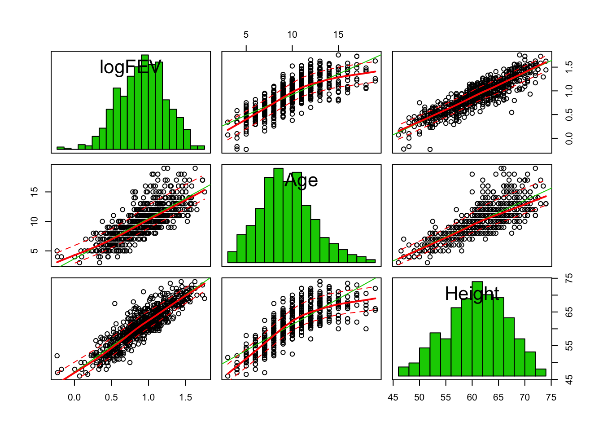
par(mfrow = c(1,3))
boxplot(logFEV~Smoker, data = fev)
boxplot(Age~Smoker, data = fev)
boxplot(Height~Smoker, data = fev)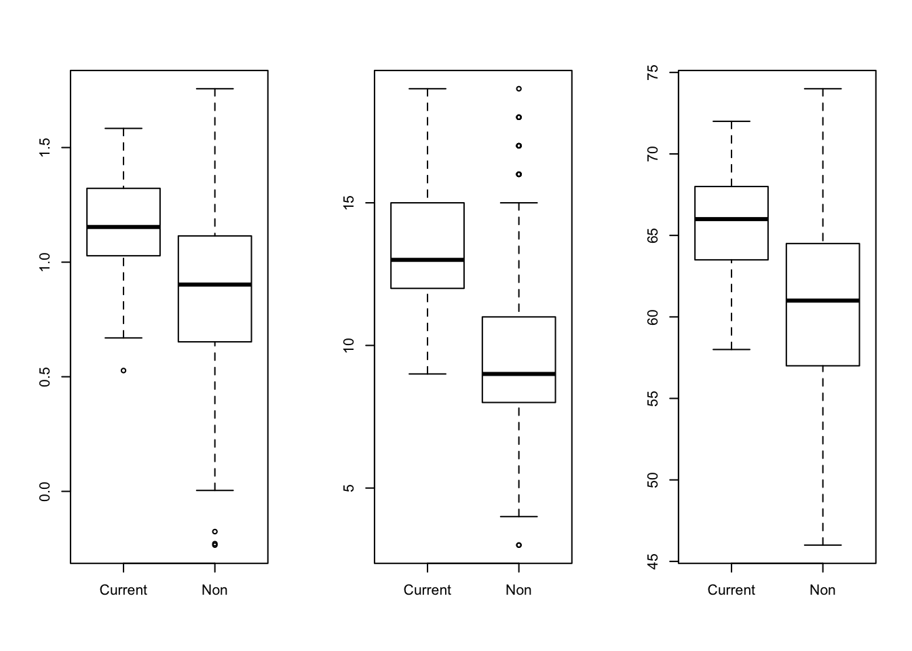
par(mfrow = c(1,1))Or in a single call to ggpairs from the GGally package:
GGally::ggpairs(fev[, c("logFEV", "Age", "Height", "Smoker")])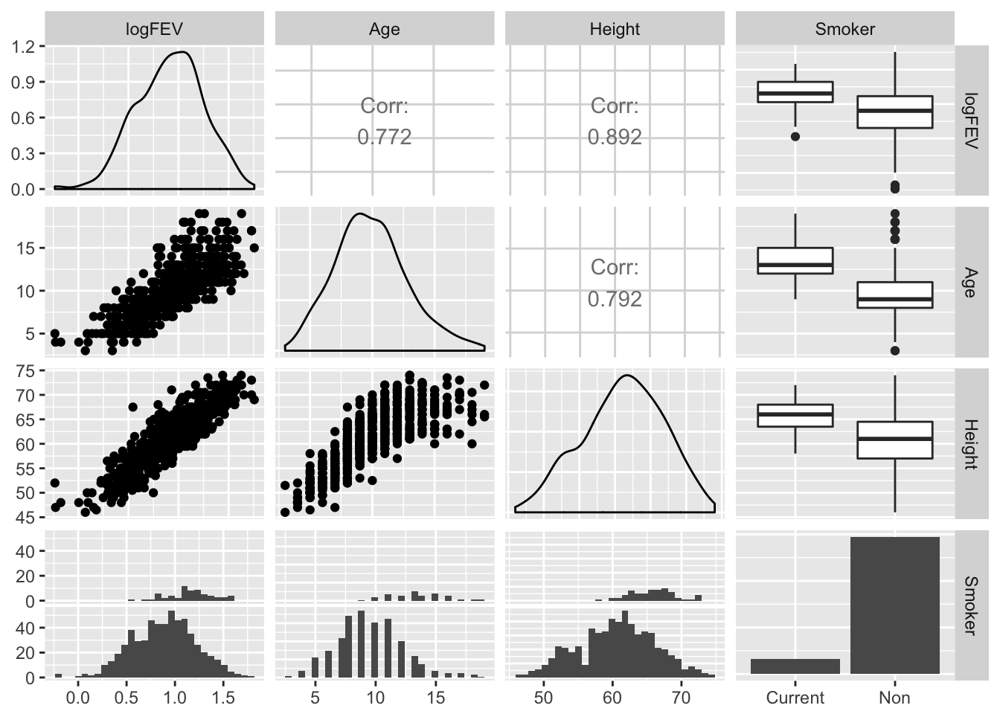
- Fit the following models: i logfev ~ smoke ii logfev ~ smoke + age iii logfev smoke + age + height What is the interpretation of the coefficients in the third model? What happens to the coefficient for smoke and its standard error when age and height are added to the model?
fit0 <- lm(logFEV~Smoker, data = fev)
fit1 <- lm(logFEV~Smoker + Age, data = fev)
fit2 <- lm(logFEV~Smoker + Age + Height, data = fev)
summary(fit0)
Call:
lm(formula = logFEV ~ Smoker, data = fev)
Residuals:
Min 1Q Median 3Q Max
-1.12285 -0.22803 0.01238 0.21777 0.86825
Coefficients:
Estimate Std. Error t value Pr(>|t|)
(Intercept) 1.16048 0.04011 28.930 < 2e-16 ***
SmokerNon -0.27208 0.04227 -6.437 2.36e-10 ***
---
Signif. codes: 0 '***' 0.001 '**' 0.01 '*' 0.05 '.' 0.1 ' ' 1
Residual standard error: 0.3234 on 652 degrees of freedom
Multiple R-squared: 0.05975, Adjusted R-squared: 0.05831
F-statistic: 41.43 on 1 and 652 DF, p-value: 2.364e-10summary(fit1)
Call:
lm(formula = logFEV ~ Smoker + Age, data = fev)
Residuals:
Min 1Q Median 3Q Max
-0.71124 -0.13458 0.00104 0.14909 0.60261
Coefficients:
Estimate Std. Error t value Pr(>|t|)
(Intercept) -0.066988 0.048864 -1.371 0.17088
SmokerNon 0.089927 0.030118 2.986 0.00293 **
Age 0.090768 0.003053 29.733 < 2e-16 ***
---
Signif. codes: 0 '***' 0.001 '**' 0.01 '*' 0.05 '.' 0.1 ' ' 1
Residual standard error: 0.2108 on 651 degrees of freedom
Multiple R-squared: 0.6012, Adjusted R-squared: 0.6
F-statistic: 490.8 on 2 and 651 DF, p-value: < 2.2e-16summary(fit2)
Call:
lm(formula = logFEV ~ Smoker + Age + Height, data = fev)
Residuals:
Min 1Q Median 3Q Max
-0.64522 -0.08431 0.00957 0.09414 0.42571
Coefficients:
Estimate Std. Error t value Pr(>|t|)
(Intercept) -2.024035 0.081080 -24.963 < 2e-16 ***
SmokerNon 0.050357 0.020924 2.407 0.0164 *
Age 0.022311 0.003334 6.692 4.77e-11 ***
Height 0.043709 0.001645 26.565 < 2e-16 ***
---
Signif. codes: 0 '***' 0.001 '**' 0.01 '*' 0.05 '.' 0.1 ' ' 1
Residual standard error: 0.1461 on 650 degrees of freedom
Multiple R-squared: 0.8088, Adjusted R-squared: 0.8079
F-statistic: 916.6 on 3 and 650 DF, p-value: < 2.2e-16The interpretation of the coefficients:
- For equal Age and Height, non-smokers have 0.05 more ml FEV
- For equal smoking status and height, FEV increases with 0.02 ml for every year in age
- For equal smoking status and age, FEV increase with 0.04ml for each unit increase in height (probably inches, since it’s the USA)
- Since we saw an indication of non-parallel lines for smokers and non-smokers in the relation between logfev and age, fit a fourth model, including the interaction of age and smoking: iv logfev = smoke, age, height, agesmoke What happens now to the coefficient for smoke and its standard error?
fit3 <- lm(logFEV~Smoker + Age + Height + Age*Smoker, data = fev)
summary(fit3)
Call:
lm(formula = logFEV ~ Smoker + Age + Height + Age * Smoker, data = fev)
Residuals:
Min 1Q Median 3Q Max
-0.64288 -0.08542 0.01064 0.09593 0.42693
Coefficients:
Estimate Std. Error t value Pr(>|t|)
(Intercept) -1.879574 0.151657 -12.394 <2e-16 ***
SmokerNon -0.075350 0.113479 -0.664 0.5069
Age 0.014344 0.007815 1.835 0.0669 .
Height 0.043153 0.001718 25.123 <2e-16 ***
SmokerNon:Age 0.009540 0.008464 1.127 0.2601
---
Signif. codes: 0 '***' 0.001 '**' 0.01 '*' 0.05 '.' 0.1 ' ' 1
Residual standard error: 0.146 on 649 degrees of freedom
Multiple R-squared: 0.8092, Adjusted R-squared: 0.808
F-statistic: 688.1 on 4 and 649 DF, p-value: < 2.2e-16The coefficient for smoke goes from positive to negative, but the standard error increases and it is no longer significant.
- Now let’s try a backward regression. Make one block with all the variables in model iv, plus sex. Choose Method=Backward to allow SPSS to drop non-significant variables. What do you get? Is this a logical model?
fit_full <- lm(logFEV~Age*Smoker + Height + Sex, data = fev)
drop1(fit_full, test = "F")Single term deletions
Model:
logFEV ~ Age * Smoker + Height + Sex
Df Sum of Sq RSS AIC F value Pr(>F)
<none> 13.693 -2516.5
Height 1 12.0819 25.775 -2104.8 571.7414 < 2.2e-16 ***
Sex 1 0.1455 13.839 -2511.6 6.8859 0.008892 **
Age:Smoker 1 0.0401 13.734 -2516.6 1.8993 0.168633
---
Signif. codes: 0 '***' 0.001 '**' 0.01 '*' 0.05 '.' 0.1 ' ' 1It looks like the interaction term can be disregarded
fit_a <- lm(logFEV~Age + Smoker + Height + Sex, data = fev)
drop1(fit_a, test = "F")Single term deletions
Model:
logFEV ~ Age + Smoker + Height + Sex
Df Sum of Sq RSS AIC F value Pr(>F)
<none> 13.734 -2516.6
Age 1 1.0323 14.766 -2471.2 48.7831 7.096e-12 ***
Smoker 1 0.1027 13.836 -2513.7 4.8537 0.02794 *
Height 1 13.7485 27.482 -2064.9 649.7062 < 2.2e-16 ***
Sex 1 0.1325 13.866 -2512.3 6.2598 0.01260 *
---
Signif. codes: 0 '***' 0.001 '**' 0.01 '*' 0.05 '.' 0.1 ' ' 1Now we would keep all variables. So FEV increases with age, ‘not smoking’, height and male sex. Seems like a reasonable model. Let’s check assumptions:
plot(fit_a, which = c(1,2))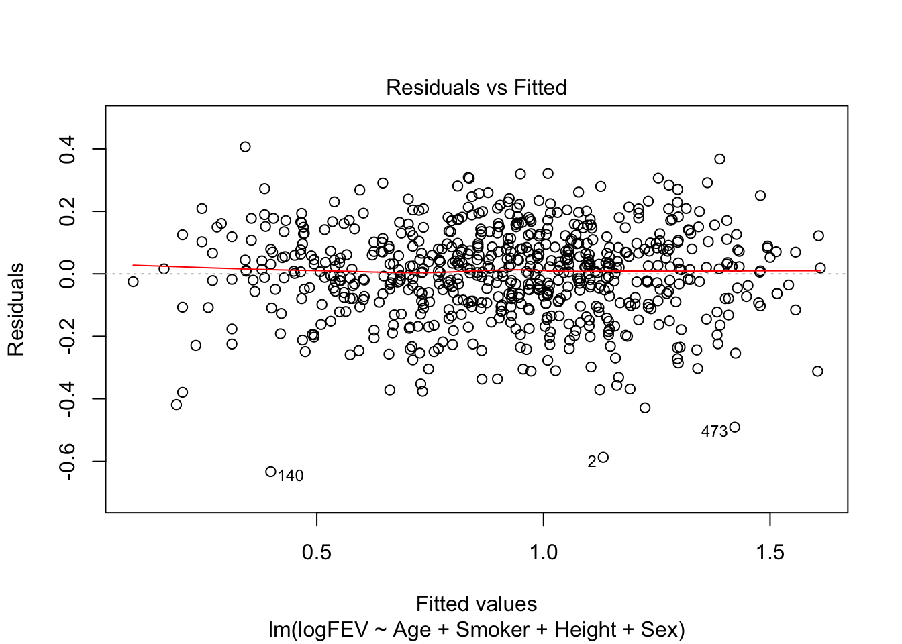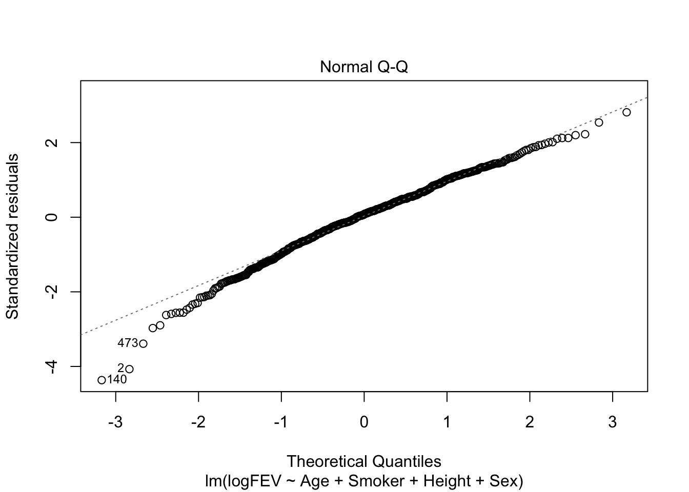
Nice homoscedasticity, residuals maybe a little skewed
hist(fit_a$residuals)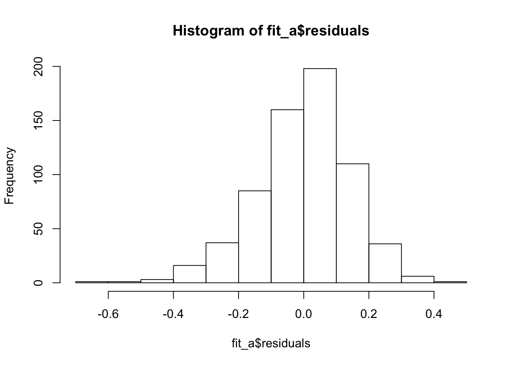
11.
Data from a study of the effect of three different methods of instruction on reading comprehension in children are stored in the file readingtestscores.dat. 66 participants (22 in each group) were given a reading comprehension test before and after receiving the instruction. The following variables were collected:
Subject: Subject number Group: Type of instruction that student received (Basal, DRTA, or Strat) PRE1: Pretest score on first reading comprehension measure PRE2: Pretest score on second reading comprehension measure POST1: Posttest score on first reading comprehension measure POST2: Posttest score on second reading comprehension measure POST3: Posttest score on third reading comprehension measure
- The dataset is a flat text file with fixed widths. You can read it into R by using the read.table() function.
It looks like the values are actually separated by a tab. Which can be read by using sep = "\t".
comp <- read.table(epistats::fromParentDir("data/readingtestscores.dat"), header = T, sep = "\t")
str(comp)'data.frame': 66 obs. of 7 variables:
$ Subject: int 1 2 3 4 5 6 7 8 9 10 ...
$ Group : Factor w/ 3 levels "Basal","DRTA",..: 1 1 1 1 1 1 1 1 1 1 ...
$ PRE1 : int 4 6 9 12 16 15 14 12 12 8 ...
$ PRE2 : int 3 5 4 6 5 13 8 7 3 8 ...
$ POST1 : int 5 9 5 8 10 9 12 5 8 7 ...
$ POST2 : int 4 5 3 5 9 8 5 5 7 7 ...
$ POST3 : int 41 41 43 46 46 45 45 32 33 39 ...
- Make a boxplot of the posttest score on the second reading comprehension measure for the three types of instruction. Do you think there are statistically significant differences between the groups?
boxplot(POST2~Group, data = comp)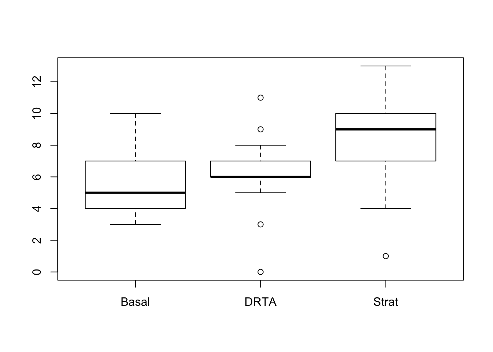
It looks like a pretty big difference, I would expect statistical significance.
- Fit a model to examine whether there are differences in the mean posttest score on the second reading comprehension measure for the three types of instruction.
fit <- lm(POST2~Group, data = comp)
summary(fit)
Call:
lm(formula = POST2 ~ Group, data = comp)
Residuals:
Min 1Q Median 3Q Max
-7.3636 -1.3295 -0.2273 1.5909 4.7727
Coefficients:
Estimate Std. Error t value Pr(>|t|)
(Intercept) 5.5455 0.5071 10.936 3.4e-16 ***
GroupDRTA 0.6818 0.7171 0.951 0.345371
GroupStrat 2.8182 0.7171 3.930 0.000214 ***
---
Signif. codes: 0 '***' 0.001 '**' 0.01 '*' 0.05 '.' 0.1 ' ' 1
Residual standard error: 2.379 on 63 degrees of freedom
Multiple R-squared: 0.2107, Adjusted R-squared: 0.1856
F-statistic: 8.407 on 2 and 63 DF, p-value: 0.0005804This summary containts the F-test, equivalent to performing an ANOVA. It also comes up with a post-hoc test for testing difference between a baseline group and the other groups.
- Test whether or not there are differences between the groups. Which hypothesis are you testing?
Since we have no prior hypothesis on which group should score better or worse, it is best to do an ANOVA with proper post-hoc tests that incorporate adjustment for multiple comparisons among all groups. \(H_0\): all groups equal, \(H_1\): not all groups are equal.
TukeyHSD(aov(POST2~Group, data = comp)) Tukey multiple comparisons of means
95% family-wise confidence level
Fit: aov(formula = POST2 ~ Group, data = comp)
$Group
diff lwr upr p adj
DRTA-Basal 0.6818182 -1.0395665 2.403203 0.6104823
Strat-Basal 2.8181818 1.0967971 4.539567 0.0006194
Strat-DRTA 2.1363636 0.4149789 3.857748 0.0112851So DRTA and Basal are equavalent. Strat is better than both of these
- This study is an example of a randomized, pre-post design. There are several ways to analyze such a design (analyzing only the post measurement, as we did above; analyzing the difference between pre and post; or using analysis of covariance), but “ANCOVA analysis” (a linear regression model with post scores at the outcome, and group and pre-intervention score as explanatory variables) has a number of advantages* over other analyses. Fit a model to examine whether there are differences in the mean posttest score on the second reading comprehension measure for the three types of instruction, controlling for the posttest score on the same test. Use the drop1() function to get p-values for the two variables in the model.
Probably what is meant in the question is ‘controlling for the pre-test score’
fit2 <- lm(POST2 ~ Group + PRE2, data = comp)
summary(fit2)
Call:
lm(formula = POST2 ~ Group + PRE2, data = comp)
Residuals:
Min 1Q Median 3Q Max
-8.2052 -1.0291 -0.2892 1.3475 5.1765
Coefficients:
Estimate Std. Error t value Pr(>|t|)
(Intercept) 4.0884 0.8445 4.841 8.95e-06 ***
GroupDRTA 0.7321 0.6983 1.048 0.298558
GroupStrat 2.9061 0.6991 4.157 0.000101 ***
PRE2 0.2763 0.1300 2.126 0.037493 *
---
Signif. codes: 0 '***' 0.001 '**' 0.01 '*' 0.05 '.' 0.1 ' ' 1
Residual standard error: 2.315 on 62 degrees of freedom
Multiple R-squared: 0.2643, Adjusted R-squared: 0.2287
F-statistic: 7.424 on 3 and 62 DF, p-value: 0.0002512
- Get the model coefficients from the model in (e) and interpret them.
coef(fit)(Intercept) GroupDRTA GroupStrat
5.5454545 0.6818182 2.8181818 For equal PRE2 score, the group with Strat instruction had 2.90 higher score on the second post-test evaluation.
- Get a summary of the model frm (c), and compare the mean squared error (called the “Residual standard error” in the R output) to that of the model in (e). What do you notice?
summary(fit)
Call:
lm(formula = POST2 ~ Group, data = comp)
Residuals:
Min 1Q Median 3Q Max
-7.3636 -1.3295 -0.2273 1.5909 4.7727
Coefficients:
Estimate Std. Error t value Pr(>|t|)
(Intercept) 5.5455 0.5071 10.936 3.4e-16 ***
GroupDRTA 0.6818 0.7171 0.951 0.345371
GroupStrat 2.8182 0.7171 3.930 0.000214 ***
---
Signif. codes: 0 '***' 0.001 '**' 0.01 '*' 0.05 '.' 0.1 ' ' 1
Residual standard error: 2.379 on 63 degrees of freedom
Multiple R-squared: 0.2107, Adjusted R-squared: 0.1856
F-statistic: 8.407 on 2 and 63 DF, p-value: 0.0005804summary(fit2)
Call:
lm(formula = POST2 ~ Group + PRE2, data = comp)
Residuals:
Min 1Q Median 3Q Max
-8.2052 -1.0291 -0.2892 1.3475 5.1765
Coefficients:
Estimate Std. Error t value Pr(>|t|)
(Intercept) 4.0884 0.8445 4.841 8.95e-06 ***
GroupDRTA 0.7321 0.6983 1.048 0.298558
GroupStrat 2.9061 0.6991 4.157 0.000101 ***
PRE2 0.2763 0.1300 2.126 0.037493 *
---
Signif. codes: 0 '***' 0.001 '**' 0.01 '*' 0.05 '.' 0.1 ' ' 1
Residual standard error: 2.315 on 62 degrees of freedom
Multiple R-squared: 0.2643, Adjusted R-squared: 0.2287
F-statistic: 7.424 on 3 and 62 DF, p-value: 0.0002512It looks like the the second model, including pre-test scores, fits the data better (since the residual standard error is lower).
*The interested reader can take a look at Vickers AJ and Altman DG. Analysing controlled trials with baseline and follow up measurements. British Medical Journal 2001;323:1123 http://www.bmj.com/content/323/7321/1123.full.pdf+html
Day 11 logistic regression
Exercises with R
Introduction
If there is an exposure (explanatory variable) in the data file that is a categorical variable where the categories are denoted by numbers, other than a 0-1, then you should tell this to R by using the function factor(). So factor(group) tells R that group is not a numeric variable but that it numbers should be used as group labels. To fit the logistic regression model use:
model <- lm(data~y+x,family=binomial). model will store the result. To see what is in it use names(model) and if you want to see something specific use for instance model$coefficients. To get the tables from the test summary(model). The deviance residuals can be obtained by residuals(model) and the fitted values by fitted.values(model). Now you can leave out 1 variable from the model and look at the differences in AIC’s. One can do this by fitting all the different models and then comparing them. One can also use the function drop1(fit). This function looks at the terms in fit, then leaves the terms out one by one and calculates for every term left out the AIC of the model. The command drop1(fit,test=“Chisq”) calculates the likelihood ratio test for every term left out. Then you can fit a model by leaving out the variable with the least influence and then start the procedure all over again using this last model as a starting point. etc. For the AIC this can also be done at once: step(model).
A note on model-building in R
R does not have the same type of forward, backward and stepwise selection procedures as SPSS. The add1 and drop1 can be used to examine variables and decide which variable should be added/dropped next. The actual adding and dropping needs to be done by the analyst, so a new model is fitted and again checked for variables that can be added/dropped. Note that the add1 and drop1 functions both give the AIC by default; an F-test (for linear models) or a chi-square test of the deviance can be obtained by using an extra option in the command. The step function was developed for automatic selection of variables using the drop1 and add1 functions repeatedly. However, please note that the AIC is used for model selection and not the deviance criterion (LR selection in SPSS). Using the scope command a “lower” and “upper” model are given and R uses a stepwise procedure (based on the AIC) to find the best model. In order to ‘trick’ R into using the chi-square test for deviance, we can give a criterion of 3.84 (instead of the default 2); note that this is equivalent to a chi-square test with 1 degree of freedom. The step function will then choose models that improve a model “significantly” based on the deviance test. Note that the critical value 3.84 is only appropriate for continuous and dichotomous explanatory variables, but not for explanatory variables with more than 2 categories (because then the degrees of freedom of the chi-square test is greater than 1 and the critical value of the chi-square test will be higher).
6.
This is a repeat of exercise #1, but now in R. The aim of this exercise is to redo the steps from this morning’s lecture, but for a different data, namely
perulung.RData, containing lung function data of 636 Peruvian children. We wish to know whether the probability of having respiratory problems is different for boys and girls. a.load(“perulung.RData”)
load(epistats::fromParentDir("data/perulung.RData"))The data frame d (containing data on FEV, age, height, gender and lung problems of Peruvian children) is now added to your workspace. Type names(d) to see the contents of the data frame.
Even better: str() will give you the names and classes (= data type) and first few observations
str(d)'data.frame': 636 obs. of 5 variables:
$ fev : num 1.56 1.18 1.87 1.49 1.62 2.11 1.73 1.47 1.83 1.41 ...
$ age : num 9.59 7.49 9.86 8.59 8.97 9.29 9.57 8.49 8.47 9.03 ...
$ height : num 125 111 136 119 121 ...
$ gender : num 0 1 0 0 1 0 1 0 1 0 ...
$ problems: num 0 0 0 0 0 1 0 1 0 0 ...
- Make a contingency table for problems vs. gender.
table(d$problems, d$gender)
0 1
0 254 237
1 81 64
- Use prop.table on the result to get the proportion of babies with low birth weight for both smoke categories.
lb <- read.table(epistats::fromParentDir("data/lowbirth.dat"), header = T)
table(lb$low, lb$smoke)
0 1
0 86 44
1 29 30prop.table(table(lb$low, lb$smoke))
0 1
0 0.4550265 0.2328042
1 0.1534392 0.1587302
- To calculate odds ratios and relative risks you can use package epicalc. Install the package and load it (using library). (Should this not work here, you could try this at home or calculate OR and RR directly by typing in the appropriate numbers.)
- Using chisq.test and prop.test on the contingency table you can test whether OR=1.
chisq.test(table(lb$low, lb$smoke))
Pearson's Chi-squared test with Yates' continuity correction
data: table(lb$low, lb$smoke)
X-squared = 4.2359, df = 1, p-value = 0.03958epiR::epi.2by2(table(lb$low, lb$smoke), method = "case.control") Outcome + Outcome - Total Prevalence *
Exposed + 86 44 130 66.2
Exposed - 29 30 59 49.2
Total 115 74 189 60.8
Odds
Exposed + 1.955
Exposed - 0.967
Total 1.554
Point estimates and 95 % CIs:
-------------------------------------------------------------------
Odds ratio (W) 2.02 (1.08, 3.78)
Attrib prevalence * 17.00 (1.87, 32.13)
Attrib prevalence in population * 11.69 (-2.84, 26.22)
Attrib fraction (est) in exposed (%) 50.35 (2.80, 74.78)
Attrib fraction (est) in population (%) 37.80 (5.47, 59.07)
-------------------------------------------------------------------
X2 test statistic: 4.924 p-value: 0.026
Wald confidence limits
* Outcomes per 100 population units
- Do a logistic regression in R using the commands
low.glm <- glm(problems ~ fev, family = binomial, data = d)
summary(low.glm)
Call:
glm(formula = problems ~ fev, family = binomial, data = d)
Deviance Residuals:
Min 1Q Median 3Q Max
-1.2041 -0.7490 -0.6377 -0.4151 2.3366
Coefficients:
Estimate Std. Error z value Pr(>|z|)
(Intercept) 1.4595 0.5234 2.788 0.0053 **
fev -1.7247 0.3393 -5.084 3.7e-07 ***
---
Signif. codes: 0 '***' 0.001 '**' 0.01 '*' 0.05 '.' 0.1 ' ' 1
(Dispersion parameter for binomial family taken to be 1)
Null deviance: 682.85 on 635 degrees of freedom
Residual deviance: 654.82 on 634 degrees of freedom
AIC: 658.82
Number of Fisher Scoring iterations: 4coefficients(low.glm)(Intercept) fev
1.459514 -1.724680 What is the logistic regression equation?
\[Ln(\frac{p}{1-p}) = \beta_0 + \beta_1X_1 = 1.4595 - 1.7247*fev\]
exp(coefficients(low.glm))will give you odds and OR. What is the odds ratio for FEV?
exp(coefficients(low.glm))(Intercept) fev
4.3038658 0.1782301
- Calculate yourself the estimated probability of suffering from lung problems for children with an fev value of 1.5.
log_odds = 1.4595 - 1.7247 * 1.5
odds = exp(log_odds)
prob = 1/(1+odds)
prob[1] 0.7553865
- Now have R do this for you using the predict command (See: How to in R and help(predict.glm)). Note: in logistic regression by default you will get predictions on the log odds scale. If you want predictions for probabilities use type=”response” in the predict command.
Compare with using the predict function
predict(low.glm, newdata = data.frame(fev = 1.5), type = "response") 1
0.2446217 This is 1-prob. It is not clear to me why it would give me this, but probably it has something to do with the 0-1 coding of the outcome (which one is predicted by the model.)
- Run a multiple logistic regression with explanatory variables fev, age, height and gender. Assign the outcome to the object full.logreg
full.logreg <- glm(problems~fev+age+height+gender, data = d, family = binomial)
- Give an estimate of the log odds of having lung problems for a child with fev=1.5, age=7, height=130 and gender=0. What if this child has age 8, 9 or 10?
predict(full.logreg,
newdata = data.frame(
fev = rep(1.5,4),
age = 7:10,
height = rep(130, 4),
gender = rep(0,4)),
type = "response") 1 2 3 4
0.4980892 0.3869328 0.2864265 0.2033667
- Repeat part l), but now estimate the probability of having lung problems.
This is probably 1 minus the answer of j.
- This is a repeat of exercise #2, but now in R. The ICU dataset consists of a sample of 200 subjects who were part of a much larger study on survival of patients following admission to an adult intensive care unit (ICU). The major goal of this study was to develop a logistic regression model to predict the probability of survival to hospital discharge of these patients and to study the risk factors associated with ICU mortality. A number of publications have appeared which have focused on various facets of the problem. The reader wishing to learn more about the clinical aspects of this study should start with Lemeshow, Teres, Avrunin, and Pastides (1988). Data were collected at Baystate Medical Center in Springfield, Massachusetts. The data are given in the dataset icu.RData. To keep the exercise simple only the most important risk factors will be considered. Identification Code id number Id Vital Status 0 = lived; 1 = died sta Age Years age Service at ICU Admission 0 = medical; 1 = surgical ser Cancer Part of Present Problem 0 = no; 1 = yes can History of Chronic Renal Failure 0 = no; 1 = yes crn Infection Probable at ICU Admission 0 = no; 1 = yes inf CPR Prior to ICU Admission 0 = no; 1 = yes cpr Systolic Blood Pressure at ICU Admission mm Hg sys Type of Admission 0 = elective; 1 = emergency typ PO2 from Initial Blood Gases 0 = > 60; 1 = < 60 po2 Bicarbonate from Initial Blood Gases 0 = > 18; 1 = < 18 bic Creatinine from Initial Blood Gases 0 = < 2.0; 1 = > 2.0 cre Level of Consciousness at ICU Admission 0 = no coma or stupor; 1 = deep stupor; 2 = coma loc
- Fit two models, one with risk factor age and one with risk factor sys.
load(epistats::fromParentDir("data/icu.RData"))
str(ICU)'data.frame': 200 obs. of 22 variables:
$ ID : num 8 12 14 28 32 38 40 41 42 50 ...
$ STA : Factor w/ 2 levels "Alive","Dead": 1 1 1 1 1 1 1 1 1 1 ...
$ AGE : num 27 59 77 54 87 69 63 30 35 70 ...
$ AGECAT: num 30 60 80 50 90 70 60 30 40 70 ...
$ SEX : Factor w/ 2 levels "Male","Female": 2 1 1 1 2 1 1 2 1 2 ...
$ RACE : Factor w/ 3 levels "White","Black",..: 1 1 1 1 1 1 1 1 2 1 ...
$ SER : Factor w/ 2 levels "Medical","Surgical": 1 1 2 1 2 1 2 1 1 2 ...
$ CAN : Factor w/ 2 levels "No","Yes": 1 1 1 1 1 1 1 1 1 2 ...
$ CRN : Factor w/ 2 levels "No","Yes": 1 1 1 1 1 1 1 1 1 1 ...
$ INF : Factor w/ 2 levels "No","Yes": 2 1 1 2 2 2 1 1 1 1 ...
$ CPR : Factor w/ 2 levels "No","Yes": 1 1 1 1 1 1 1 1 1 1 ...
$ SYS : num 142 112 100 142 110 110 104 144 108 138 ...
$ HRA : num 88 80 70 103 154 132 66 110 60 103 ...
$ PRE : Factor w/ 2 levels "No","Yes": 1 2 1 1 2 1 1 1 1 1 ...
$ TYP : Factor w/ 2 levels "Elective","Emergency": 2 2 1 2 2 2 1 2 2 1 ...
$ FRA : Factor w/ 2 levels "No","Yes": 1 1 1 2 1 1 1 1 1 1 ...
$ PO2 : Factor w/ 2 levels "> 60","<= 60": 1 1 1 1 1 2 1 1 1 1 ...
$ PH : Factor w/ 2 levels ">= 7.25","< 7.25": 1 1 1 1 1 1 1 1 1 1 ...
$ PCO : Factor w/ 2 levels "<= 45","> 45": 1 1 1 1 1 1 1 1 1 1 ...
$ BIC : Factor w/ 2 levels ">= 18","< 18": 1 1 1 1 1 2 1 1 1 1 ...
$ CRE : Factor w/ 2 levels "<= 2.0","> 2.0": 1 1 1 1 1 1 1 1 1 1 ...
$ LOC : Factor w/ 3 levels "No Coma or Stupor",..: 1 1 1 1 1 1 1 1 1 1 ...
- attr(*, "variable.labels")= Named chr "Identification Code" "Status" "Age in Years" "Age Class" ...
..- attr(*, "names")= chr "ID" "STA" "AGE" "AGECAT" ...
- attr(*, "codepage")= int 1252fit1 <- glm(STA~AGE, data = ICU, family = binomial)
fit2 <- glm(STA~SYS, data = ICU, family = binomial)
- Give for both models an interpretation of the estimate of the OR with its 95% CI for the specific risk factor at hand.
summary(fit1)
Call:
glm(formula = STA ~ AGE, family = binomial, data = ICU)
Deviance Residuals:
Min 1Q Median 3Q Max
-0.9536 -0.7391 -0.6145 -0.3905 2.2854
Coefficients:
Estimate Std. Error z value Pr(>|z|)
(Intercept) -3.05851 0.69608 -4.394 1.11e-05 ***
AGE 0.02754 0.01056 2.607 0.00913 **
---
Signif. codes: 0 '***' 0.001 '**' 0.01 '*' 0.05 '.' 0.1 ' ' 1
(Dispersion parameter for binomial family taken to be 1)
Null deviance: 200.16 on 199 degrees of freedom
Residual deviance: 192.31 on 198 degrees of freedom
AIC: 196.31
Number of Fisher Scoring iterations: 4summary(fit2)
Call:
glm(formula = STA ~ SYS, family = binomial, data = ICU)
Deviance Residuals:
Min 1Q Median 3Q Max
-1.1606 -0.7051 -0.5956 -0.4056 2.6860
Coefficients:
Estimate Std. Error z value Pr(>|z|)
(Intercept) 0.777195 0.757375 1.026 0.30481
SYS -0.017019 0.006001 -2.836 0.00456 **
---
Signif. codes: 0 '***' 0.001 '**' 0.01 '*' 0.05 '.' 0.1 ' ' 1
(Dispersion parameter for binomial family taken to be 1)
Null deviance: 200.16 on 199 degrees of freedom
Residual deviance: 191.34 on 198 degrees of freedom
AIC: 195.34
Number of Fisher Scoring iterations: 4exp(MASS:::confint.glm(fit1)) 2.5 % 97.5 %
(Intercept) 0.01060992 0.1657402
AGE 1.00794194 1.0508611exp(MASS:::confint.glm(fit2)) 2.5 % 97.5 %
(Intercept) 0.4999454 9.9225414
SYS 0.9711451 0.9943778The 95% confidence interval for the variable AGE is strictly greater than 1, so with increasing age, the risk of death is greater. For SYS it is the other way around.
- Which model fits the data best, and why?
The model with SYS is best, as it has the lowest AIC.
- Fit a model with each of the other risk factors separately. Notice that all these risk factors are categorical so you need the ‘factor’ option.
Lets do this in an R-programming way that repeats the same steps for each of the values in independent_vars
independent_vars <- c("AGE", "SER", "CAN", "CRN", "INF", "CPR",
"SYS", "TYP", "PO2", "BIC", "CRE", "LOC")
fits <- lapply(independent_vars, function(var) {
form <- reformulate(termlabels = var, response = "STA")
fit <- glm(form, family = binomial, data = ICU)
return(fit)
})Now fits is a list with 12 glm-fits, each item of this list contains 1 fit. The fit can be extracted with fits[[i]], where i is between 1 and 12.
- Which risk factors can explain the vital status? Which one is the most important one?
Lets get the AIC for each of the fits
aics <- sapply(fits, function(fit) {
result <- summary(fit)
result$aic
})
data.frame(independent_vars, aics) independent_vars aics
1 AGE 196.3064
2 SER 197.2419
3 CAN 204.1610
4 CRN 198.7367
5 INF 197.5853
6 CPR 196.2285
7 SYS 195.3351
8 TYP 188.5246
9 PO2 202.9208
10 BIC 202.5621
11 CRE 199.3959
12 LOC 169.7845Now we see that CPR has the lowest AIC
- So far every risk factor has been examined separately. Can vital status also explained by 2 or more risk factors? Build a model using the ‘step’ procedure. Discuss the final model.
fit0 <- glm(STA~1, family = binomial, data = ICU)
fit_all <- glm(reformulate(termlabels = independent_vars, response = "STA"),
family = binomial, data = ICU)
fit_step_aic <- step(fit0, scope = list(upper = fit_all), data = ICU,
direction = "both")Start: AIC=202.16
STA ~ 1
Df Deviance AIC
+ LOC 2 163.78 169.78
+ TYP 1 184.53 188.53
+ SYS 1 191.34 195.34
+ CPR 1 192.23 196.23
+ AGE 1 192.31 196.31
+ SER 1 193.24 197.24
+ INF 1 193.59 197.59
+ CRN 1 194.74 198.74
+ CRE 1 195.40 199.40
<none> 200.16 202.16
+ BIC 1 198.56 202.56
+ PO2 1 198.92 202.92
+ CAN 1 200.16 204.16
Step: AIC=169.78
STA ~ LOC
Df Deviance AIC
+ TYP 1 150.92 158.92
+ SYS 1 155.97 163.97
+ SER 1 157.55 165.55
+ AGE 1 157.55 165.55
+ INF 1 159.23 167.23
+ CRE 1 160.39 168.39
+ CRN 1 161.32 169.32
+ BIC 1 161.53 169.53
+ CPR 1 161.66 169.66
<none> 163.78 169.78
+ PO2 1 163.09 171.09
+ CAN 1 163.30 171.30
- LOC 2 200.16 202.16
Step: AIC=158.92
STA ~ LOC + TYP
Df Deviance AIC
+ AGE 1 141.75 151.75
+ CAN 1 144.85 154.85
+ SYS 1 145.41 155.41
+ INF 1 148.02 158.02
+ CRE 1 148.87 158.87
<none> 150.92 158.92
+ CRN 1 149.28 159.28
+ CPR 1 149.76 159.76
+ BIC 1 150.01 160.01
+ SER 1 150.11 160.11
+ PO2 1 150.74 160.74
- TYP 1 163.78 169.78
- LOC 2 184.53 188.53
Step: AIC=151.75
STA ~ LOC + TYP + AGE
Df Deviance AIC
+ CAN 1 134.50 146.50
+ SYS 1 136.19 148.19
<none> 141.75 151.75
+ CPR 1 140.38 152.38
+ CRE 1 140.62 152.62
+ INF 1 140.76 152.76
+ SER 1 141.18 153.18
+ CRN 1 141.21 153.21
+ BIC 1 141.33 153.33
+ PO2 1 141.75 153.75
- AGE 1 150.92 158.92
- TYP 1 157.55 165.55
- LOC 2 172.91 178.91
Step: AIC=146.5
STA ~ LOC + TYP + AGE + CAN
Df Deviance AIC
+ SYS 1 128.37 142.37
<none> 134.50 146.50
+ INF 1 133.33 147.33
+ CPR 1 133.53 147.53
+ SER 1 133.79 147.79
+ BIC 1 133.80 147.80
+ CRE 1 133.88 147.88
+ CRN 1 134.08 148.08
+ PO2 1 134.44 148.44
- CAN 1 141.75 151.75
- AGE 1 144.85 154.85
- TYP 1 156.91 166.91
- LOC 2 168.97 176.97
Step: AIC=142.37
STA ~ LOC + TYP + AGE + CAN + SYS
Df Deviance AIC
<none> 128.37 142.37
+ CRN 1 127.16 143.16
+ CPR 1 127.24 143.24
+ SER 1 127.84 143.84
+ PO2 1 127.89 143.89
+ CRE 1 127.94 143.94
+ INF 1 128.09 144.09
+ BIC 1 128.16 144.16
- SYS 1 134.50 146.50
- CAN 1 136.19 148.19
- AGE 1 138.91 150.91
- TYP 1 148.31 160.31
- LOC 2 163.43 173.43fit_step_chi <- step(fit0, scope = list(upper = fit_all), data = ICU,
direction = "both", test = "Chisq")Start: AIC=202.16
STA ~ 1
Df Deviance AIC LRT Pr(>Chi)
+ LOC 2 163.78 169.78 36.376 1.262e-08 ***
+ TYP 1 184.53 188.53 15.636 7.676e-05 ***
+ SYS 1 191.34 195.34 8.826 0.002970 **
+ CPR 1 192.23 196.23 7.932 0.004856 **
+ AGE 1 192.31 196.31 7.855 0.005069 **
+ SER 1 193.24 197.24 6.919 0.008528 **
+ INF 1 193.59 197.59 6.576 0.010338 *
+ CRN 1 194.74 198.74 5.424 0.019859 *
+ CRE 1 195.40 199.40 4.765 0.029044 *
<none> 200.16 202.16
+ BIC 1 198.56 202.56 1.599 0.206067
+ PO2 1 198.92 202.92 1.240 0.265431
+ CAN 1 200.16 204.16 0.000 1.000000
---
Signif. codes: 0 '***' 0.001 '**' 0.01 '*' 0.05 '.' 0.1 ' ' 1
Step: AIC=169.78
STA ~ LOC
Df Deviance AIC LRT Pr(>Chi)
+ TYP 1 150.92 158.92 12.865 0.0003347 ***
+ SYS 1 155.97 163.97 7.810 0.0051971 **
+ SER 1 157.55 165.55 6.237 0.0125089 *
+ AGE 1 157.55 165.55 6.236 0.0125214 *
+ INF 1 159.23 167.23 4.556 0.0327954 *
+ CRE 1 160.39 168.39 3.399 0.0652399 .
+ CRN 1 161.32 169.32 2.463 0.1165812
+ BIC 1 161.53 169.53 2.256 0.1331049
+ CPR 1 161.66 169.66 2.125 0.1449209
<none> 163.78 169.78
+ PO2 1 163.09 171.09 0.692 0.4056016
+ CAN 1 163.30 171.30 0.486 0.4857399
- LOC 2 200.16 202.16 36.376 1.262e-08 ***
---
Signif. codes: 0 '***' 0.001 '**' 0.01 '*' 0.05 '.' 0.1 ' ' 1
Step: AIC=158.92
STA ~ LOC + TYP
Df Deviance AIC LRT Pr(>Chi)
+ AGE 1 141.75 151.75 9.169 0.0024618 **
+ CAN 1 144.85 154.85 6.071 0.0137454 *
+ SYS 1 145.41 155.41 5.514 0.0188684 *
+ INF 1 148.02 158.02 2.899 0.0886130 .
+ CRE 1 148.87 158.87 2.048 0.1524527
<none> 150.92 158.92
+ CRN 1 149.28 159.28 1.642 0.2000466
+ CPR 1 149.76 159.76 1.162 0.2810979
+ BIC 1 150.01 160.01 0.906 0.3411915
+ SER 1 150.11 160.11 0.806 0.3691795
+ PO2 1 150.74 160.74 0.184 0.6683444
- TYP 1 163.78 169.78 12.865 0.0003347 ***
- LOC 2 184.53 188.53 33.605 5.043e-08 ***
---
Signif. codes: 0 '***' 0.001 '**' 0.01 '*' 0.05 '.' 0.1 ' ' 1
Step: AIC=151.75
STA ~ LOC + TYP + AGE
Df Deviance AIC LRT Pr(>Chi)
+ CAN 1 134.50 146.50 7.2520 0.007082 **
+ SYS 1 136.19 148.19 5.5655 0.018317 *
<none> 141.75 151.75
+ CPR 1 140.38 152.38 1.3704 0.241736
+ CRE 1 140.62 152.62 1.1301 0.287752
+ INF 1 140.76 152.76 0.9870 0.320468
+ SER 1 141.18 153.18 0.5712 0.449791
+ CRN 1 141.21 153.21 0.5364 0.463932
+ BIC 1 141.33 153.33 0.4202 0.516848
+ PO2 1 141.75 153.75 0.0027 0.958930
- AGE 1 150.92 158.92 9.1687 0.002462 **
- TYP 1 157.55 165.55 15.7985 7.046e-05 ***
- LOC 2 172.91 178.91 31.1563 1.716e-07 ***
---
Signif. codes: 0 '***' 0.001 '**' 0.01 '*' 0.05 '.' 0.1 ' ' 1
Step: AIC=146.5
STA ~ LOC + TYP + AGE + CAN
Df Deviance AIC LRT Pr(>Chi)
+ SYS 1 128.37 142.37 6.129 0.013299 *
<none> 134.50 146.50
+ INF 1 133.33 147.33 1.166 0.280262
+ CPR 1 133.53 147.53 0.968 0.325077
+ SER 1 133.79 147.79 0.708 0.400223
+ BIC 1 133.80 147.80 0.702 0.402155
+ CRE 1 133.88 147.88 0.620 0.431225
+ CRN 1 134.08 148.08 0.414 0.519906
+ PO2 1 134.44 148.44 0.055 0.813999
- CAN 1 141.75 151.75 7.252 0.007082 **
- AGE 1 144.85 154.85 10.350 0.001295 **
- TYP 1 156.91 166.91 22.407 2.206e-06 ***
- LOC 2 168.97 176.97 34.477 3.262e-08 ***
---
Signif. codes: 0 '***' 0.001 '**' 0.01 '*' 0.05 '.' 0.1 ' ' 1
Step: AIC=142.37
STA ~ LOC + TYP + AGE + CAN + SYS
Df Deviance AIC LRT Pr(>Chi)
<none> 128.37 142.37
+ CRN 1 127.16 143.16 1.209 0.271544
+ CPR 1 127.24 143.24 1.127 0.288461
+ SER 1 127.84 143.84 0.531 0.466296
+ PO2 1 127.89 143.89 0.484 0.486839
+ CRE 1 127.94 143.94 0.426 0.513722
+ INF 1 128.09 144.09 0.282 0.595079
+ BIC 1 128.16 144.16 0.215 0.642891
- SYS 1 134.50 146.50 6.129 0.013299 *
- CAN 1 136.19 148.19 7.815 0.005180 **
- AGE 1 138.91 150.91 10.544 0.001165 **
- TYP 1 148.31 160.31 19.935 8.011e-06 ***
- LOC 2 163.43 173.43 35.059 2.438e-08 ***
---
Signif. codes: 0 '***' 0.001 '**' 0.01 '*' 0.05 '.' 0.1 ' ' 1summary(fit_step_aic)
Call:
glm(formula = STA ~ LOC + TYP + AGE + CAN + SYS, family = binomial,
data = ICU)
Deviance Residuals:
Min 1Q Median 3Q Max
-2.1625 -0.5415 -0.3204 -0.0783 2.6344
Coefficients:
Estimate Std. Error z value Pr(>|z|)
(Intercept) -5.419e+00 1.791e+00 -3.025 0.00248 **
LOCDeep Stupor 2.154e+01 1.458e+03 0.015 0.98821
LOCComa 2.415e+00 8.739e-01 2.764 0.00572 **
TYPEmergency 3.847e+00 1.269e+00 3.032 0.00243 **
AGE 3.807e-02 1.297e-02 2.935 0.00334 **
CANYes 2.592e+00 9.621e-01 2.694 0.00705 **
SYS -1.775e-02 7.469e-03 -2.377 0.01746 *
---
Signif. codes: 0 '***' 0.001 '**' 0.01 '*' 0.05 '.' 0.1 ' ' 1
(Dispersion parameter for binomial family taken to be 1)
Null deviance: 200.16 on 199 degrees of freedom
Residual deviance: 128.37 on 193 degrees of freedom
AIC: 142.37
Number of Fisher Scoring iterations: 16Both the AIC and the chi-squared method converged to the same model.
The final model includes 4 variables:
- Level of consciousness
- Type of admission
- Age
- Cancer part of the problem
- Systolic blood pressure
The directions of all these variables make sense: risk is increased for higher levels, except for systolic blood pressure, as having a lower blood pressure (in an ICU setting) is worse.
Even though variables could be added and dropped, they only got added.
- In the final model there is one risk factor that was not significant in the separate analyses. Can you explain this?
First check which one this was. In each fit object, when calling summary, the p-value for the coefficients is in the 4th column of row 2 of the coefficients table
summary(fits[[1]])$coefficients Estimate Std. Error z value Pr(>|z|)
(Intercept) -3.05851323 0.69608124 -4.393903 1.113337e-05
AGE 0.02754261 0.01056416 2.607174 9.129303e-03pvals <- sapply(fits, function(fit) summary(fit)$coefficients[2,4])
data.frame(independent_vars, pvals) independent_vars pvals
1 AGE 0.009129303
2 SER 0.010115450
3 CAN 1.000000000
4 CRN 0.015484454
5 INF 0.011301735
6 CPR 0.003982224
7 SYS 0.004564731
8 TYP 0.002949129
9 PO2 0.247743943
10 BIC 0.188070017
11 CRE 0.024060809
12 LOC 0.986369728Here, CAN has a p-value of 1. It must have collinearity with at least 1 of the other included variables, which can act as confounders. We can do a quick scan for colleniarity with a pairwise distribution plot
included_terms <- attr(fit_step_aic$terms, "term.labels")
included_terms[1] "LOC" "TYP" "AGE" "CAN" "SYS"require(GGally)
GGally::ggpairs(ICU[, included_terms])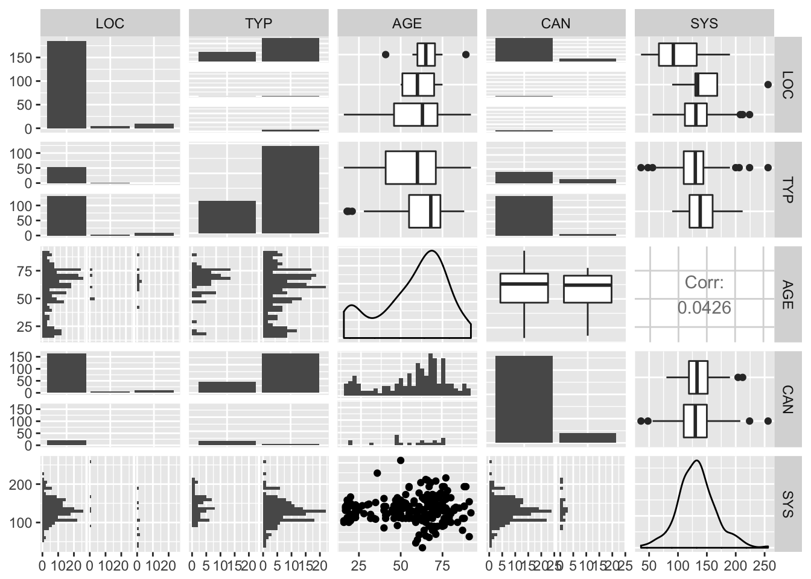
From a quick look at this graph, it looks like CAN and TYP are related.
Now we will try to fit the best logistic curve by eye to the ICU data with categorized age (agecat) as only explanatory variable.
- Make a table of sta against agecat (with sta as column variable), and put the result in an object called tab.
tab <- table(factor(ICU$STA), factor(ICU$AGECAT))
tab
20 30 40 50 60 70 80 90
Alive 25 7 11 18 33 39 21 6
Dead 2 0 2 5 10 7 10 4
- Have R calculate the proportion of people dying in the ICU for each age category, using the object tab.
prop_tab <- prop.table(tab, margin = 2)
- Plot these proportions against the age category.
y = prop_tab[2,]
x = colnames(prop_tab)
plot(x, y, ylim = c(0,1))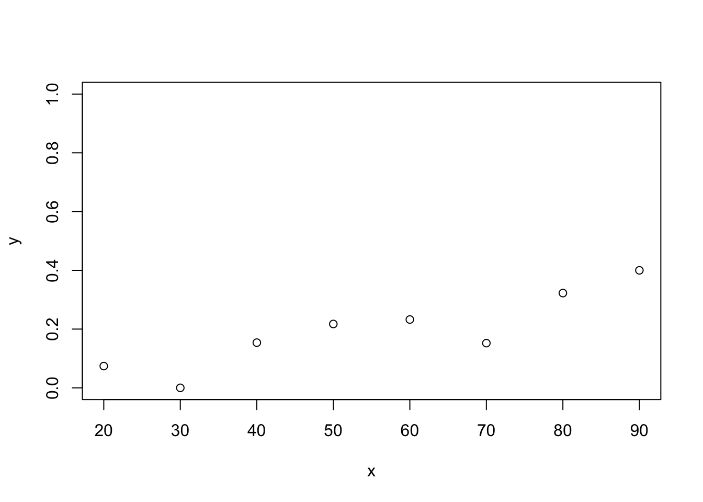
- Try to fit the best logistic curve to these points (see previous exercise, part e, with different values for b0 and b1).
The reference to ‘previous excercise, part e’ is unclear, but we will try to solve it. A logistic line follows the equation:
\[p(x) = \frac{1}{1+e^{-(\beta_0 + \beta_1*x)}}\]
The probability of death for age category 20 is low, so lets choose a low intercept, say \(\beta_0 = -4\). At the top of our distribution, the probability approaches 50%. Lets set \(\beta_1\) such that at age 100, \(\beta_0 + \beta_1 * 100 = 0\). So \(\beta_1 = 0.04\)
x_levels <- 20:90
y_levels <- 1/(1+exp(-1*(-4 + 0.04*x_levels)))
plot(x,y)
lines(x_levels, y_levels)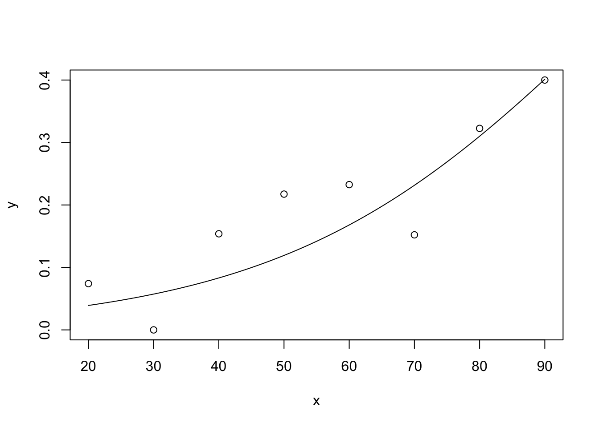
Not too bad
- Do a logistic regression on these data to get the best parameter estimates.
There is some ambituity here, we could use AGECAT as a (sort-of) continous variable, with very discrete values. But since the researchers wanted to discretize age into categories, we might wan’t to treat AGECAT as a factor variable. Based on the provided answers, treat AGECAT as ‘continous’, at least such that 90-80 = 50-40.
fit_age <- glm(STA~AGECAT, family = binomial, data = ICU)
coefs <- (coef(fit_age))
exp(coefs)(Intercept) AGECAT
0.05055254 1.02650429 - Plot the points again, and add the logistic curve with the parameters from e).
x_vals <- 20:90
y_vals <- 1/(1+exp(-1*(coefs[1] + coefs[2] * x_vals)))
plot(x,y)
lines(x_vals, y_vals)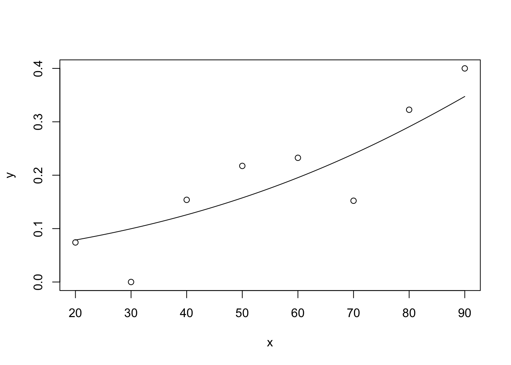
8.
This is a repeat of exercise #3, but now in R. In the years 1995 through 1998 a research was done among 1243 Dalmatian puppies. It was determined whether or not they were deaf in at least one ear. The research question was if deafness was related to pigmentation. In order to answer this it was measured whether or not there were many spots on the skin, whether or not they had a spot on the head and whether or not the dog had blue eyes. In addition one wants to determine if there was heredity involved. In order to look at this the family history score was determined. This is a method to cope with litter effects (heredity): for every puppy it was determined how many brothers or sisters were deaf. Call this number m. Then from the whole dataset the fraction of dogs that are deaf can be determined. This fraction is multiplied by litter size - 1. This is then the expected number of deaf brothers or sisters when there are no differences between litters. The family history score is now defined as fhs = m - fraction * (litter size - 1) Whether or not the puppy is deaf (0=no, 1=yes) deaf The number of spots on the skin (1=light, 2=moderate, 3=heavy) spot Whether or not the dog had blue eyes (0=no, 1=yes) blueeye Whether or not the dog had an spot on the head (0=no, 1=yes) headspot Gender (0=male, 1=female) gender Family history score fhs
- Read in the data file dalmatian.csv.
dal <- read.csv(epistats::fromParentDir("data/dalmatian.csv"))
dal <- read.table(epistats::fromParentDir("data/dalmatian.csv"), header = T,
sep = ",")
str(dal)'data.frame': 1243 obs. of 6 variables:
$ deaf : int 0 0 0 0 0 0 0 0 0 0 ...
$ spot : int 2 2 2 2 2 2 2 2 2 2 ...
$ blueeye : int 0 0 0 0 0 0 0 0 0 0 ...
$ headspot: int 0 0 1 0 0 1 1 1 0 0 ...
$ gender : int 0 1 1 1 0 0 0 1 1 1 ...
$ fhs : num -0.173 -1.038 -1.038 -1.038 -1.038 ...
- Explain how the variable fhs deals with the heredity.
hist(dal$fhs)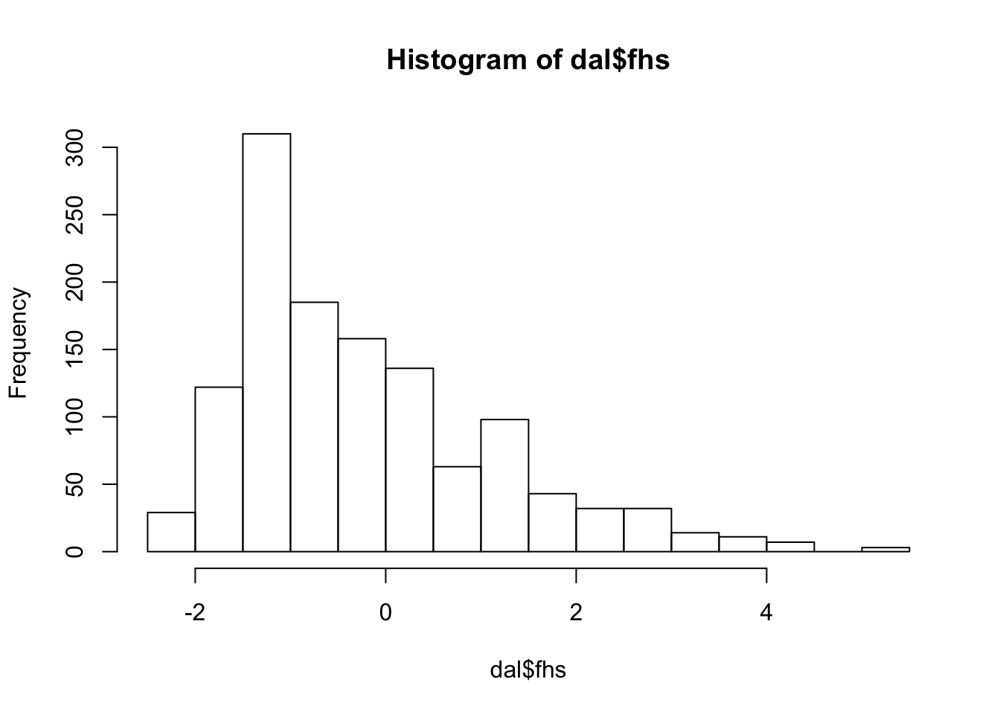
fhs is the difference between the observed number of deaf puppies in a litter, and the expected number of deaf puppies in the litter, given that all litters are equal, so there is no effect of heredity. A puppy with fhs smaller than 0 was born in a litter with fewer deaf siblings than expected, so in a ‘protected’ litter.
- Fit the logistic regression model for deaf with fhs as an exposure variable.
fit <- glm(deaf~fhs, data = dal, family = binomial)- Compare the AIC of the previous model with the model that only contains a constant. Also calculate the likelihood ratio and interpret the results.
fit0 <- glm(deaf~1, data = dal, family = binomial)
summary(fit)
Call:
glm(formula = deaf ~ fhs, family = binomial, data = dal)
Deviance Residuals:
Min 1Q Median 3Q Max
-1.4296 -0.6062 -0.5012 -0.4382 2.2741
Coefficients:
Estimate Std. Error z value Pr(>|z|)
(Intercept) -1.58544 0.07853 -20.190 < 2e-16 ***
fhs 0.41004 0.05144 7.971 1.57e-15 ***
---
Signif. codes: 0 '***' 0.001 '**' 0.01 '*' 0.05 '.' 0.1 ' ' 1
(Dispersion parameter for binomial family taken to be 1)
Null deviance: 1145.0 on 1242 degrees of freedom
Residual deviance: 1081.2 on 1241 degrees of freedom
AIC: 1085.2
Number of Fisher Scoring iterations: 4summary(fit0)
Call:
glm(formula = deaf ~ 1, family = binomial, data = dal)
Deviance Residuals:
Min 1Q Median 3Q Max
-0.6163 -0.6163 -0.6163 -0.6163 1.8733
Coefficients:
Estimate Std. Error z value Pr(>|z|)
(Intercept) -1.56473 0.07499 -20.87 <2e-16 ***
---
Signif. codes: 0 '***' 0.001 '**' 0.01 '*' 0.05 '.' 0.1 ' ' 1
(Dispersion parameter for binomial family taken to be 1)
Null deviance: 1145 on 1242 degrees of freedom
Residual deviance: 1145 on 1242 degrees of freedom
AIC: 1147
Number of Fisher Scoring iterations: 3The model with fhs has a lower AIC, so fits the data better.
lmtest::lrtest(fit0)Likelihood ratio test
Model 1: deaf ~ 1
Model 2: deaf ~ 1
#Df LogLik Df Chisq Pr(>Chisq)
1 1 -572.48
2 1 -572.48 0 0 1lmtest::lrtest(fit)Likelihood ratio test
Model 1: deaf ~ fhs
Model 2: deaf ~ 1
#Df LogLik Df Chisq Pr(>Chisq)
1 2 -540.59
2 1 -572.48 -1 63.775 1.395e-15 ***
---
Signif. codes: 0 '***' 0.001 '**' 0.01 '*' 0.05 '.' 0.1 ' ' 1lmtest::lrtest(fit0, fit)Likelihood ratio test
Model 1: deaf ~ 1
Model 2: deaf ~ fhs
#Df LogLik Df Chisq Pr(>Chisq)
1 1 -572.48
2 2 -540.59 1 63.775 1.395e-15 ***
---
Signif. codes: 0 '***' 0.001 '**' 0.01 '*' 0.05 '.' 0.1 ' ' 1
- Which model fits the data best, and why?
The model with the explanatory variable, since this one has a higher log-likelihood
9.
This is a repeat of exercise #4, but now in R. Low birth weight is an outcome that has been of concern to physicians for years. This is due to the fact that infant mortality rates and birth defect rates are very high for low birth weight babies. A woman’s behavior during pregnancy (including diet, smoking habits, and receiving prenatal care) can greatly alter the chances of carrying the baby to term and, consequently, of delivering a baby of normal birth weight. The variables, listed below, have been shown to be associated with low birth weight in the obstetrical literature. The goal of the current study was to ascertain if these variables were important in the population being served by the medical center where the data were collected. So one wants to identify risk factors associated with giving birth to a low birth weight baby (weighing less than 2500 grams). Data were collected on 189 women, 59 of which had low birth weight babies and 130 of which had normal birth weight babies. The four variables, that are thought to be of importance, are age, weight of the subject at her last menstrual period, race, and the number of physician visits during the first trimester of pregnancy. Source: Hosmer and Lemeshow, Applied Logistic Regression, Wiley, (1989). Identification Code id Birth Weight in Grams bwt Low Birth Weight (0 = bwt 2500g; 1 = bwt < 2500g), lowb Age of the Mother in Years age Weight in Pounds at the Last Menstrual Period lwt Race (1 = White, 2 = Black, 3 = Other) race Smoking Status During Pregnancy (1 = Yes, 0 = No) smoke History of Premature Labor (0 = None 1 = One, etc.) ptl History of Hypertension (1 = Yes, 0 = No) ht Presence of Uterine Irritability (1 = Yes, 0 = No) ui Number of Physician Visits During the First Trimester (0,1, 2, …) ftv a. Read in the dataset lowbirth.dat
lb <- read.table(epistats::fromParentDir("data/lowbirth.dat"), header = T)
str(lb)'data.frame': 189 obs. of 11 variables:
$ id : int 85 86 87 88 89 91 92 93 94 95 ...
$ low : int 0 0 0 0 0 0 0 0 0 0 ...
$ age : int 19 33 20 21 18 21 22 17 29 26 ...
$ lwt : int 182 155 105 108 107 124 118 103 123 113 ...
$ race : int 2 3 1 1 1 3 1 3 1 1 ...
$ smoke: int 0 0 1 1 1 0 0 0 1 1 ...
$ ptl : int 0 0 0 0 0 0 0 0 0 0 ...
$ ht : int 0 0 0 0 0 0 0 0 0 0 ...
$ ui : int 1 0 0 1 1 0 0 0 0 0 ...
$ ftv : int 0 3 1 2 0 0 1 1 1 0 ...
$ bwt : int 2523 2551 2557 2594 2600 2622 2637 2637 2663 2665 ...
- Fit three models, one with exposure age, one with exposure smoke and one with the exposure ht.
fit_0 <- glm(low~1 , data = lb, family = binomial)
fit_age <- glm(low~age, data = lb, family = binomial)
fit_smoke <- glm(low~smoke, data = lb, family = binomial)
fit_ht <- glm(low~ht, data = lb, family = binomial)
- Give for all 3 models an interpretation of the estimate of for the specific exposure at hand.
exp(coef(fit_age))(Intercept) age
1.4690000 0.9501333 exp(coef(fit_smoke))(Intercept) smoke
0.3372093 2.0219436 exp(coef(fit_ht))(Intercept) ht
0.416000 3.365385 Higher age reduces the risk of low birth weight, smoking increases the risk, hypertension also increases the risk. The exponents of the coefficients are the odds-ratios comparing those with the exposure against those without.
- Compare all 3 models to the model with only an intercept in it using AIC. Calculate for each the likelihood ratio and give an interpretation.
Compare AICs
summary(fit_0)$aic[1] 236.672summary(fit_age)$aic[1] 235.912summary(fit_smoke)$aic[1] 233.8046summary(fit_ht)$aic[1] 234.6499Each model is a little better than the null model (i.e. has lower AIC)
LR tests:
lmtest::lrtest(fit_0, fit_age)Likelihood ratio test
Model 1: low ~ 1
Model 2: low ~ age
#Df LogLik Df Chisq Pr(>Chisq)
1 1 -117.34
2 2 -115.96 1 2.76 0.09665 .
---
Signif. codes: 0 '***' 0.001 '**' 0.01 '*' 0.05 '.' 0.1 ' ' 1lmtest::lrtest(fit_0, fit_smoke)Likelihood ratio test
Model 1: low ~ 1
Model 2: low ~ smoke
#Df LogLik Df Chisq Pr(>Chisq)
1 1 -117.34
2 2 -114.90 1 4.8674 0.02737 *
---
Signif. codes: 0 '***' 0.001 '**' 0.01 '*' 0.05 '.' 0.1 ' ' 1lmtest::lrtest(fit_0, fit_ht)Likelihood ratio test
Model 1: low ~ 1
Model 2: low ~ ht
#Df LogLik Df Chisq Pr(>Chisq)
1 1 -117.34
2 2 -115.33 1 4.0221 0.04491 *
---
Signif. codes: 0 '***' 0.001 '**' 0.01 '*' 0.05 '.' 0.1 ' ' 1Ony the smoke and ht models are significantly better than the null-model, according to the LR-test
- Compare the 3 models with each other by comparing AIC. Also calculate likelihood ratios.
lmtest::lrtest(fit_age, fit_smoke)Likelihood ratio test
Model 1: low ~ age
Model 2: low ~ smoke
#Df LogLik Df Chisq Pr(>Chisq)
1 2 -115.96
2 2 -114.90 0 2.1074 < 2.2e-16 ***
---
Signif. codes: 0 '***' 0.001 '**' 0.01 '*' 0.05 '.' 0.1 ' ' 1lmtest::lrtest(fit_age, fit_ht)Likelihood ratio test
Model 1: low ~ age
Model 2: low ~ ht
#Df LogLik Df Chisq Pr(>Chisq)
1 2 -115.96
2 2 -115.33 0 1.2621 < 2.2e-16 ***
---
Signif. codes: 0 '***' 0.001 '**' 0.01 '*' 0.05 '.' 0.1 ' ' 1lmtest::lrtest(fit_smoke, fit_ht)Likelihood ratio test
Model 1: low ~ smoke
Model 2: low ~ ht
#Df LogLik Df Chisq Pr(>Chisq)
1 2 -114.90
2 2 -115.33 0 0.8453 < 2.2e-16 ***
---
Signif. codes: 0 '***' 0.001 '**' 0.01 '*' 0.05 '.' 0.1 ' ' 1
- Which model fits the data best, and why?
The model with smoke has the lowest Log-likelihood, which is significantly different from th eother models
- Fit the logistic regression model with exposures age, lwt, race, smoke, ptl, ht, ui and ftv.
fit_full <- glm(low~age+lwt+race+smoke+ptl+ht+ui+ftv, data = lb, family = binomial)
summary(fit_full)
Call:
glm(formula = low ~ age + lwt + race + smoke + ptl + ht + ui +
ftv, family = binomial, data = lb)
Deviance Residuals:
Min 1Q Median 3Q Max
-1.8832 -0.8178 -0.5574 1.0288 2.1451
Coefficients:
Estimate Std. Error z value Pr(>|z|)
(Intercept) -0.078975 1.276254 -0.062 0.95066
age -0.035845 0.036472 -0.983 0.32569
lwt -0.012387 0.006614 -1.873 0.06111 .
race 0.453424 0.215294 2.106 0.03520 *
smoke 0.937275 0.398458 2.352 0.01866 *
ptl 0.542087 0.346168 1.566 0.11736
ht 1.830720 0.694135 2.637 0.00835 **
ui 0.721965 0.463174 1.559 0.11906
ftv 0.063461 0.169765 0.374 0.70854
---
Signif. codes: 0 '***' 0.001 '**' 0.01 '*' 0.05 '.' 0.1 ' ' 1
(Dispersion parameter for binomial family taken to be 1)
Null deviance: 234.67 on 188 degrees of freedom
Residual deviance: 204.19 on 180 degrees of freedom
AIC: 222.19
Number of Fisher Scoring iterations: 4
- Find out which exposures can be left out using AIC.
drop1(fit_full)Single term deletions
Model:
low ~ age + lwt + race + smoke + ptl + ht + ui + ftv
Df Deviance AIC
<none> 204.19 222.19
age 1 205.18 221.18
lwt 1 208.03 224.03
race 1 208.75 224.75
smoke 1 209.89 225.89
ptl 1 206.72 222.72
ht 1 211.52 227.52
ui 1 206.58 222.58
ftv 1 204.33 220.33Dropping age and ftv would lower AIC, so they can be left out.
- Discuss the final model.
fit_final <- glm(low~lwt+race+smoke+ptl+ht+ui, data = lb, family = binomial)
summary(fit_final)
Call:
glm(formula = low ~ lwt + race + smoke + ptl + ht + ui, family = binomial,
data = lb)
Deviance Residuals:
Min 1Q Median 3Q Max
-1.8915 -0.8121 -0.5471 1.0389 2.1140
Coefficients:
Estimate Std. Error z value Pr(>|z|)
(Intercept) -0.803644 1.041394 -0.772 0.44029
lwt -0.012947 0.006555 -1.975 0.04823 *
race 0.469131 0.211799 2.215 0.02676 *
smoke 0.948172 0.395139 2.400 0.01641 *
ptl 0.491451 0.341378 1.440 0.14998
ht 1.833160 0.690234 2.656 0.00791 **
ui 0.747935 0.459942 1.626 0.10392
---
Signif. codes: 0 '***' 0.001 '**' 0.01 '*' 0.05 '.' 0.1 ' ' 1
(Dispersion parameter for binomial family taken to be 1)
Null deviance: 234.67 on 188 degrees of freedom
Residual deviance: 205.21 on 182 degrees of freedom
AIC: 219.21
Number of Fisher Scoring iterations: 4drop1(fit_final)Single term deletions
Model:
low ~ lwt + race + smoke + ptl + ht + ui
Df Deviance AIC
<none> 205.21 219.21
lwt 1 209.58 221.58
race 1 210.31 222.31
smoke 1 211.17 223.17
ptl 1 207.34 219.34
ht 1 212.61 224.61
ui 1 207.81 219.81Is this the same as using the step function?
fit_step <- step(fit_0, scope = list(upper = fit_full), data = lb, direction = "both")Start: AIC=236.67
low ~ 1
Df Deviance AIC
+ ptl 1 227.89 231.89
+ lwt 1 228.69 232.69
+ ui 1 229.60 233.60
+ smoke 1 229.81 233.81
+ ht 1 230.65 234.65
+ race 1 231.10 235.10
+ age 1 231.91 235.91
<none> 234.67 236.67
+ ftv 1 233.90 237.90
Step: AIC=231.89
low ~ ptl
Df Deviance AIC
+ lwt 1 223.41 229.41
+ ht 1 223.58 229.58
+ age 1 224.27 230.27
+ race 1 224.27 230.27
+ smoke 1 224.78 230.78
+ ui 1 224.89 230.89
<none> 227.89 231.89
+ ftv 1 227.30 233.30
- ptl 1 234.67 236.67
Step: AIC=229.41
low ~ ptl + lwt
Df Deviance AIC
+ ht 1 215.96 223.96
+ smoke 1 220.54 228.54
+ race 1 220.98 228.98
+ age 1 221.05 229.05
+ ui 1 221.23 229.23
<none> 223.41 229.41
+ ftv 1 223.12 231.12
- lwt 1 227.89 231.89
- ptl 1 228.69 232.69
Step: AIC=223.96
low ~ ptl + lwt + ht
Df Deviance AIC
+ ui 1 213.01 223.01
+ smoke 1 213.15 223.15
<none> 215.96 223.96
+ race 1 214.00 224.00
+ age 1 214.01 224.01
+ ftv 1 215.84 225.84
- ptl 1 221.14 227.14
- ht 1 223.41 229.41
- lwt 1 223.58 229.58
Step: AIC=223.01
low ~ ptl + lwt + ht + ui
Df Deviance AIC
+ smoke 1 210.31 222.31
<none> 213.01 223.01
+ race 1 211.17 223.17
+ age 1 211.33 223.33
- ui 1 215.96 223.96
- ptl 1 216.61 224.61
+ ftv 1 212.95 224.95
- lwt 1 219.61 227.61
- ht 1 221.23 229.23
Step: AIC=222.31
low ~ ptl + lwt + ht + ui + smoke
Df Deviance AIC
+ race 1 205.21 219.21
<none> 210.31 222.31
+ age 1 208.77 222.77
- ptl 1 212.83 222.83
- smoke 1 213.01 223.01
- ui 1 213.15 223.15
+ ftv 1 210.29 224.29
- lwt 1 216.63 226.63
- ht 1 218.45 228.45
Step: AIC=219.21
low ~ ptl + lwt + ht + ui + smoke + race
Df Deviance AIC
<none> 205.21 219.21
- ptl 1 207.34 219.34
- ui 1 207.81 219.81
+ age 1 204.33 220.33
+ ftv 1 205.18 221.18
- lwt 1 209.58 221.58
- race 1 210.31 222.31
- smoke 1 211.17 223.17
- ht 1 212.61 224.61sort(attr(fit_final$terms, "term.labels"))[1] "ht" "lwt" "ptl" "race" "smoke" "ui" sort(attr(fit_step$terms, "term.labels"))[1] "ht" "lwt" "ptl" "race" "smoke" "ui" Yes it is the same as using stepwise selection, which considers some extra models.
- Write a short report about your findings. Include the statistical model you used, the method you used to reduce this model and the final results (estimate and standard errors).
Left for now
10. Optional This is a repeat of exercise #5, but now in R. The aim of this exercise is to familiarize you with the logistic functions.
- Make a sequence of values for x by giving the commands
x <- seq(-2.5,2.5,by=0.1)
x # The content of x is now printed to your screen. [1] -2.5 -2.4 -2.3 -2.2 -2.1 -2.0 -1.9 -1.8 -1.7 -1.6 -1.5 -1.4 -1.3 -1.2
[15] -1.1 -1.0 -0.9 -0.8 -0.7 -0.6 -0.5 -0.4 -0.3 -0.2 -0.1 0.0 0.1 0.2
[29] 0.3 0.4 0.5 0.6 0.7 0.8 0.9 1.0 1.1 1.2 1.3 1.4 1.5 1.6
[43] 1.7 1.8 1.9 2.0 2.1 2.2 2.3 2.4 2.5
- Define y1 as
y1 <- exp(1+3*x)/(1+exp(1+3*x))
- Then run the command
plot(x,y1,type="l") 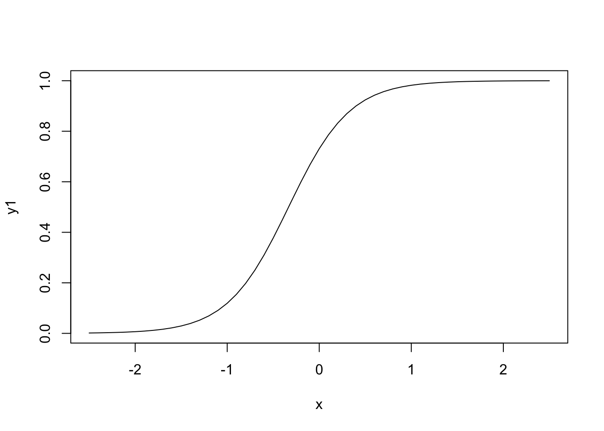
(The subcommand type “l” connects the points with a line.) This results in the graph of the logistic function with coefficients b0 = 1 and b1 = 3.
- Define y2 using b0 = 1 and b1 = 2, and y3 using b0 = 1 and b1 = -2
y2 <- exp(1+2*x)/(1+exp(1+2*x))
y3 <- exp(1-2*x)/(1+exp(1-2*x))- Add these to the existing plot using lines(x, y2, lty=2) and similar for y3.
plot(x,y1,type="l")
lines(x,y2,lty = 2)
lines(x,y3,lty = 2) 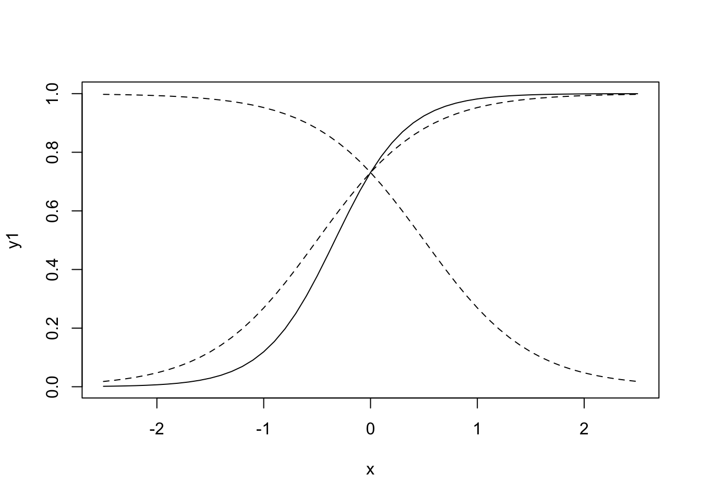
- Draw a horizontal line at y=0.5 using the command abline(h=0.5)
plot(x,y1,type="l")
lines(x,y2,lty = 2)
lines(x,y3,lty = 2)
abline(h = 0.5)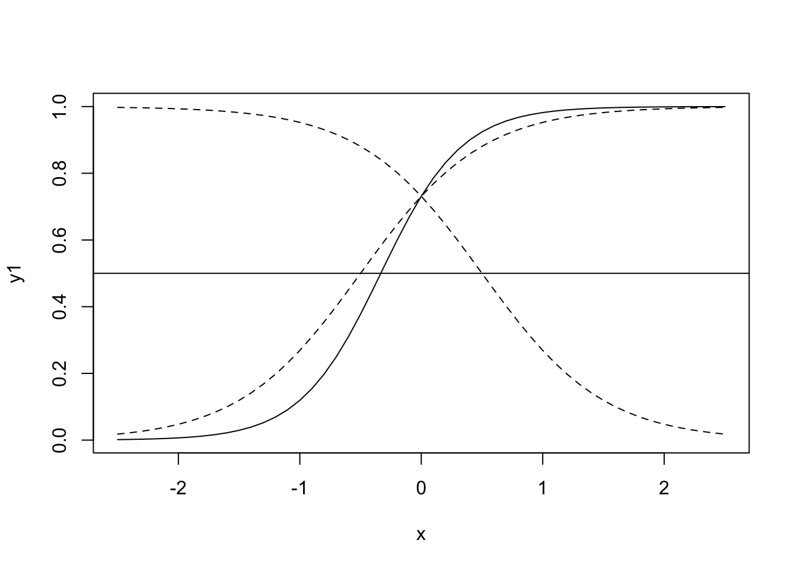
Do you understand how this abline command works?.
It takes a slope and intercept (or vertical / horizontal value) and draws a line. h = 0.5 means a horizontal line at y = 0.5
- Read off from the graphs at which x-values the horizontal line from f) intersects each of the curves. How does the answer connect to the values of b0 and b1? What would be the interpretation of those x-values in a logistic regression?
From the formula one can read that \(p = 0.5\) when \(\beta_0 + \beta_1x = 0\). So for y1, x = -1/3, for y2, x = -1/2, for y3, x = 1/2. This matches the plot
Session information
sessionInfo()R version 3.3.2 (2016-10-31)
Platform: x86_64-apple-darwin13.4.0 (64-bit)
Running under: macOS Sierra 10.12.6
locale:
[1] en_US.UTF-8/en_US.UTF-8/en_US.UTF-8/C/en_US.UTF-8/en_US.UTF-8
attached base packages:
[1] stats graphics grDevices utils datasets methods base
other attached packages:
[1] GGally_1.3.1 ggplot2_2.2.1 bindrcpp_0.2 dplyr_0.7.4 car_2.1-5
loaded via a namespace (and not attached):
[1] zoo_1.8-0 reshape2_1.4.2 corrplot_0.77
[4] splines_3.3.2 lattice_0.20-35 colorspace_1.3-2
[7] htmltools_0.3.6 yaml_2.1.16 mgcv_1.8-17
[10] survival_2.41-3 rlang_0.1.6 nloptr_1.0.4
[13] foreign_0.8-69 glue_1.2.0 RColorBrewer_1.1-2
[16] BiasedUrn_1.07 plyr_1.8.4 bindr_0.1
[19] stringr_1.2.0 MatrixModels_0.4-1 munsell_0.4.3
[22] gtable_0.2.0 evaluate_0.10.1 labeling_0.3
[25] knitr_1.18 SparseM_1.77 lmtest_0.9-35
[28] quantreg_5.33 pbkrtest_0.4-7 parallel_3.3.2
[31] Rcpp_0.12.14 backports_1.1.0 scales_0.4.1
[34] lme4_1.1-13 digest_0.6.13 stringi_1.1.6
[37] epiR_0.9-91 grid_3.3.2 rprojroot_1.2
[40] tools_3.3.2 magrittr_1.5 lazyeval_0.2.0
[43] tibble_1.3.4 pkgconfig_2.0.1 MASS_7.3-47
[46] Matrix_1.2-10 data.table_1.10.4 epistats_0.1.0
[49] assertthat_0.2.0 minqa_1.2.4 rmarkdown_1.8
[52] reshape_0.8.6 R6_2.2.2 nnet_7.3-12
[55] nlme_3.1-131 git2r_0.20.0 This R Markdown site was created with workflowr